본 포스트는 서울대학교 컴퓨터공학부 시스템 프로그래밍(System Programming, M1522.000800, Fall 2026) 강의 자료 중 21강 — Concurrent Programming: Synchronization (총 70장)를 바탕으로, 강의를 처음 듣는 독자도 논리적 흐름을 따라갈 수 있도록 재구성한 것입니다. 동시성 단원은 세 부분으로 나뉘며, 19강(Concurrency)이 동시성 프로그래밍의 개념과 프로세스로 만든 동시성 서버를, 20강(Threads and Threading Models)이 스레드와 Pthreads 인터페이스를 다졌다면, 이 강의는 셋째 부분인 Part III: Races and Synchronization으로서 여러 스레드가 데이터를 함께 쓸 때 생기는 문제와 그 해법을 다룹니다. 원본 슬라이드는 영문으로 작성되어 있고, 본문의 대섹션은 단원 구성 · 개요 슬라이드와 다섯 장의 구분 슬라이드(Sharing Data in Threaded Programs → Mutual Exclusion → Semaphores → Synchronization → Module Summary)를 따랐으며, 가장 긴 Synchronization 단원은 슬라이드가 주제마다 다시 보여 주는 목차(생산자-소비자 문제 · 독자-저자 문제 · 스레드 안전성 · 경쟁 · 교착 상태)대로 나누었습니다. 코드 파일 이름(
badcnt.c,sbuf.c,echoservert_pre.c,rw1.c,race.c등)과 진행 그래프 그림에서 보듯, 슬라이드의 예제는 대부분 교재 Bryant & O’Hallaron, Computer Systems: A Programmer’s Perspective (3rd ed.) 12장(동시성 프로그래밍)의 것을 바탕으로 한 것으로 보입니다. 강의 자료(.pptx)에는 숨김 슬라이드도 발표자 노트도 없습니다. 슬라이드 코드의 오타와 표준에 어긋나는 부분(인자 하나가 빠진pthread_join,ppen_listenfd, 시드를int *로 받는rand_r등)은 해당 위치에서 바로잡거나 짚었고, 진행 그래프와 세마포어에 관한 몇 가지 사실은 이 글을 쓰며 직접 세어 보거나 컴파일해 확인했습니다.
한 줄 요약 (TL;DR)
“스레드는 주소 공간을 함께 쓰므로 공유 변수를 고치는 명령들이 번갈아 실행되면 결과가 틀어지고, 세마포어의 P · V로 임계 구역을 감싸 상호 배제를 강제하면 이를 막을 수 있지만, 그 대가로 성능 · 스레드 안전성 · 교착 상태를 따로 챙겨야 합니다.”
변수가 공유되는지는 “전역은 공유, 지역은 사적”이라는 통념이 아니라 여러 스레드가 그 변수의 한 인스턴스를 참조하는가로 정해지며, 다른 스레드의 스택조차 포인터만 있으면 건드릴 수 있습니다. 두 스레드가
cnt++를 1만 번씩 하면 20,000이 나와야 하지만,cnt++는 적재(L) · 갱신(U) · 저장(S) 세 명령이라 그 사이에 다른 스레드가 끼어들면 13,051 같은 값이 나오고, 진행 그래프로 보면 결과가 옳은 실행은 두 스레드가 동시에 임계 구역에 있는 안전하지 않은 영역을 피해 가는 궤적과 정확히 일치합니다. 초깃값 1인 세마포어로 임계 구역을P(mutex)·V(mutex)로 감싸면 값이 음수가 될 상태들이 금지 영역이 되어 안전하지 않은 영역을 둘러싸므로, 어떤 궤적도 그 안에 들어가지 못합니다. 세마포어는 다른 스레드에게 조건을 알리는 데도 쓰여 생산자-소비자 문제(빈 칸과 항목을 세는 계수 세마포어 둘과 뮤텍스 하나, 그리고 이를 쓴 작업자 스레드 풀 서버)와 독자-저자 문제를 풀지만, 스레드에서 부르는 함수는 스레드 안전해야 하고(안전하지 않은 함수의 네 부류와 재진입 함수), 스레드 인자로 상태를 의도치 않게 공유하면 경쟁이 생기며, 잠금을 여러 개 쓸 때는 교착 상태를 피하도록 모든 스레드가 같은 순서로 잠금을 얻어야 합니다.
1. 동시성 (Concurrency)
1.1 세 부분으로 나뉜 단원 (Part I · Part II · Part III)
동시성(concurrency) 단원은 세 부분으로 나뉘어 있고, 이번 강의는 그 마지막 부분입니다.
| 부분 | 주제 | 강의 |
|---|---|---|
| Part I | 소개, 동시성 프로세스 (Introduction, Concurrent Processes) | 19강 |
| Part II | 스레드와 스레딩 모델 (Threads and Threading Models) | 20강 |
| Part III | 경쟁과 동기화 (Races and Synchronization) | 21강(이번 강의) |
- 슬라이드는 Part I과 Part II를 회색으로 흐리게 처리해 이번 강의가 Part III임을 표시합니다.
- 19강은 동시성 프로그래밍이 어려운 이유로 경쟁(race), 교착 상태(deadlock), 그리고 라이브락 · 기아 상태 · 공정성 문제를 꼽았습니다. 20강은 스레드가 한 프로세스의 주소 공간을 함께 쓰는 실행 흐름이라는 것과 Pthreads 인터페이스를 다루었고, 스레드에 인자를 넘기다 생기는 경쟁이 실제로 일어난다는 것을 실험으로 보였습니다.
- 이번 강의는 바로 그 “함께 쓰는 데이터”를 정면으로 다룹니다. 무엇이 공유되는지, 공유가 왜 위험한지, 그 위험을 어떤 도구로 막는지, 그리고 그 도구가 새로 만드는 문제는 무엇인지가 차례로 나옵니다.
1.2 이번 강의의 구성 (Lecture Overview)
개요 슬라이드는 Part III에서 다룰 항목을 다음과 같이 나열하며, 이 항목들이 차례로 이 포스트의 2–6장이 됩니다.
- Data Sharing — 데이터 공유 (2장)
- Mutual Exclusion — 상호 배제 (3장)
- Semaphores — 세마포어 (4장)
- Synchronization — 동기화 (5장)
- Producer-consumer problem — 생산자-소비자 문제
- Readers-writer problem — 독자-저자 문제
- Thread safety — 스레드 안전성
- Races — 경쟁
- Deadlocks — 교착 상태
- Summary — 요약 (6장)
2. 스레드 프로그램의 데이터 공유 (Sharing Data in Threaded Programs)
구분 슬라이드에는 메인 스레드 스택의 변수 i 하나를 두 피어 스레드의 vargp가 함께 가리키는 그림이 실려 있습니다. 같은 그림이 2.3절에서 시간의 흐름과 함께 다시 나오므로 거기서 자세히 봅니다. 20강에서 스레드의 장점으로 꼽은 “데이터를 쉽게 나눠 쓸 수 있다”는 성질이 이 장의 출발점이자, 이 강의 전체가 다루는 문제의 뿌리입니다.
2.2 스레드 메모리 모델 (Threads Memory Model)
개념적 모델(conceptual model)은 다음과 같습니다.
- 여러 스레드가 한 프로세스의 문맥 안에서 실행됩니다.
- 스레드마다 자기만의 스레드 문맥(thread context)이 따로 있습니다.
- 나머지 프로세스 문맥(process context)은 모든 스레드가 공유합니다.
| 구분 | 항목 |
|---|---|
| 스레드마다 따로 (스레드 문맥) | 스레드 ID, 스택, 스택 포인터, PC, 조건 코드, 범용(GP) 레지스터 |
| 모든 스레드가 공유 (프로세스 문맥의 나머지) | 프로세스 가상 주소 공간의 코드 · 데이터 · 힙 · 공유 라이브러리 세그먼트, 열린 파일, 설치된 (시그널) 핸들러 |
그런데 실제 동작(operationally)은 이 모델을 엄격히 강제하지 않습니다.
- 레지스터 값은 정말로 분리되어 보호됩니다. 문맥 교환 때 커널이 스레드마다 레지스터를 저장하고 복원하므로, 다른 스레드가 내 레지스터를 들여다볼 방법은 없습니다.
- 그러나 어떤 스레드든 다른 스레드의 스택을 읽고 쓸 수 있습니다. 스택은 스레드마다 “따로” 있지만 결국 같은 가상 주소 공간 안의 메모리이므로, 주소만 알면 접근이 막히지 않습니다.
슬라이드는 이 개념적 모델과 실제 동작 사이의 불일치가 혼란과 오류의 원천이라고 강조합니다. 2.3–2.5절의 예가 모두 이 틈에서 생기고, 2.7절에서 스택 변수 msgs가 공유 변수로 분류되는 것도 같은 이유입니다.
2.3 의도하지 않은 공유: 앞에서 본 예 (Unintended Sharing: Example from earlier…)
슬라이드 제목의 “앞에서 본 예”는 20강의 경쟁 시험(race test)입니다. 메인 스레드는 스레드 100개를 만들며 모두에게 같은 변수 i의 주소를 넘기고, 스레드는 그 주소에서 값을 읽습니다.
// Main
int i;
for (i = 0; i < 100; i++) {
pthread_create(&tid, NULL,
thread, &i); // 모든 스레드에 "같은" i의 주소를 넘긴다
}// Thread
void *thread(void *vargp)
{
int ti = *((int *)vargp); // 지금 이 순간의 i 값을 읽는다
return (void*)&ti;
}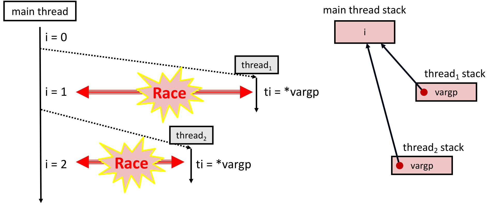
i의 값입니다. 메인 스레드에서 비스듬히 뻗은 점선 화살표가 피어 스레드 thread₁과 thread₂를 만드는 pthread_create 호출이고, 각 피어 스레드의 짧은 세로 화살표 옆 ti = *vargp가 넘겨받은 주소에서 i를 읽는 순간입니다. 빨간 양방향 화살표와 노란 테두리의 폭발 모양 Race 표시는, thread₁이 i를 읽는 일과 메인 스레드가 i를 1로 바꾸는 일 가운데 무엇이 먼저 일어나느냐에 따라 thread₁이 읽는 값이 0일 수도 1일 수도 있다는 뜻이며, thread₂와 i = 2 사이도 마찬가지입니다. 오른쪽의 분홍 상자들은 스택에 놓인 변수로, main thread stack의 i 하나를 thread₁ stack과 thread₂ stack의 vargp(빨간 점에서 출발하는 화살표)가 함께 가리킵니다. 피어 스레드마다 vargp는 따로 있지만 그것이 가리키는 i는 하나뿐이라는 것, 곧 의도하지 않은 공유가 경쟁의 원인이라는 것이 이 그림의 요점입니다.- 메인 스레드는 반복할 때마다 같은 변수
i의 주소&i를 넘깁니다.i는 메인 스레드의 스택에 단 하나뿐인 인스턴스입니다. - 피어 스레드는 시작하자마자
*vargp, 곧 그 순간의i값을 읽어 자기 지역 변수ti에 담습니다. - 문제는 두 사건의 순서입니다. thread₁이
ti = *vargp를 실행하기 전에 메인 스레드가i++를 해 버리면, thread₁은 자기 몫인 0이 아니라 1을 읽습니다. 어느 쪽이 먼저일지는 스케줄링에 달려 있으므로 실행할 때마다 결과가 달라질 수 있습니다. - 20강의 실험은 이 경쟁이 실제로 일어난다는 것, 곧 스레드들이 돌려준 값이 0부터 99까지를 하나씩 담지 않는 실행이 있다는 것을 보였습니다.
- 덧붙여, 이 슬라이드의
return (void*)&ti;는 스레드가 끝나면 사라지는 지역 변수ti의 주소를 돌려줍니다. 20강의 경쟁 시험은 값 자체를 포인터로 바꿔 돌려주었는데((void*)i), 이 슬라이드처럼 주소를 돌려주면pthread_join으로 받은 포인터가 이미 사라진 스택을 가리키므로 역참조해서는 안 됩니다. 슬라이드의 요점은 반환값이 아니라&i를 넘기는 쪽에 있습니다.
2.4 의도하지 않은 공유 피하기: 올바른 방법 (Avoid Unintended Sharing: The Proper Way)
해결책은 스레드마다 자기 몫의 값을 담은 별도의 칸을 마련해 그 주소를 넘기는 것입니다. 슬라이드가 빨간 글씨로 표시한 바뀐 부분은, main에서 malloc으로 만든 칸에 i를 복사해 그 주소 iptr를 넘기는 세 곳과, 스레드가 그 칸에서 값을 꺼낸 뒤 free하는 두 줄입니다.
char **ptr; // global
int main() {
long i;
pthread_t tid[2];
char *msgs[2] = {
"Hello from foo",
"Hello from bar"
};
ptr = msgs;
for (i = 0; i < 2; i++) {
long *iptr = malloc(sizeof(long)); // 스레드마다 새 칸을 만들어
*iptr = i; // i의 "값"을 복사해 두고
pthread_create(&tid[i], NULL,
thread, iptr); // 그 칸의 주소를 넘긴다
}
for (i = 0; i < 2; i++)
pthread_join(tid[i], NULL); // 슬라이드: NULL 빠짐
return EXIT_SUCCESS;
}// thread routine
void *thread(void *vargp)
{
long myid = *(long*)vargp; // 자기 칸에서 값을 꺼내고
free(vargp); // 다 쓴 칸은 피어 스레드가 해제한다
static int cnt = 0;
printf("[%ld]: %s (svar=%d)\n",
myid, ptr[myid], ++cnt);
return NULL; // 슬라이드에는 없다
}- 반복할 때마다
malloc으로 새 칸을 만들어i의 값을 복사하므로, 각 스레드는 서로 다른 칸을 받습니다. 메인 스레드가 그 뒤에i를 바꿔도 이미 복사된 값은 변하지 않습니다. - 해제는 값을 꺼낸 피어 스레드가 합니다. 메인 스레드는 피어 스레드가 언제 값을 읽을지 모르므로 자기가 해제하면 아직 읽히지 않은 칸을 해제할 위험이 있고, 아무도 해제하지 않으면 메모리가 샙니다.
- 슬라이드의 주석대로, 피어 스레드는 전역 변수
ptr을 거쳐 메인 스레드의 스택(msgs배열)을 간접적으로 참조합니다. 이것은 의도한 공유이며, 2.2절에서 말한 “다른 스레드의 스택도 읽을 수 있다”는 실제 동작의 예입니다. - 슬라이드 코드의
pthread_join(tid[i]);는 인자가 하나 모자랍니다.pthread_join은int pthread_join(pthread_t thread, void **retval)처럼 스레드의 반환값을 받을 자리를 두 번째 인자로 받으므로, 반환값이 필요 없으면NULL을 넘깁니다. 스레드 루틴 끝의return NULL;도 슬라이드에는 없어 함께 보탰습니다.
2.5 의도하지 않은 공유 피하기: 편법 (Avoid Unintended Sharing: The Hacky Way)
malloc과 free 없이 같은 효과를 내는 방법도 있습니다. 주소 대신 값 자체를 포인터인 척 넘기는 것입니다.
char **ptr; // global
int main() {
long i;
pthread_t tid[2];
char *msgs[2] = {
"Hello from foo",
"Hello from bar"
};
ptr = msgs;
for (i = 0; i < 2; i++) {
pthread_create(&tid[i],
NULL, thread, (void *)i); // 정수 i를 포인터로 "위장"해 넘긴다
}
for (i = 0; i < 2; i++)
pthread_join(tid[i], NULL); // 2.4절과 같은 이유로 NULL을 보탰다
return EXIT_SUCCESS;
}// thread routine
void *thread(void *vargp)
{
long myid = (long)vargp; // 가짜 포인터를 다시 long으로 되돌린다
static int cnt = 0;
printf("[%ld]: %s (svar=%d)\n",
myid, ptr[myid], ++cnt);
return NULL;
}슬라이드는 이것을 타입 체계를 우회하는(bypassing the type system) 방법이라고 부르며 세 단계로 설명합니다.
long i를 포인터void*라고 우깁니다.- 그 값을 값으로(by value), 레지스터에 담아
thread()에 넘깁니다. 스레드 루틴의 첫 번째 인자이므로 x86-64에서는%rdi에 실려 갑니다. thread()안에서 가짜 포인터를 다시long으로 형 변환해 원래 값을 되찾습니다.
넘어가는 것이 주소가 아니라 값이므로, 메인 스레드가 나중에 i를 바꿔도 피어 스레드가 받은 값은 그대로입니다. 다만 이 방법은 long과 포인터의 크기가 같아(x86-64 리눅스에서는 둘 다 8바이트) 왕복 변환에서 값이 보존된다는 데 기댑니다. C 표준은 정수와 포인터 사이의 변환 결과를 구현에 맡기므로 이 왕복의 이식성은 보장되지 않습니다. 그래서 long 대신 <stdint.h>의 intptr_t를 쓰는 것이 관례인데, 표준이 intptr_t로 보장하는 것도 포인터에서 출발하는 왕복(포인터 → intptr_t → 포인터)뿐이라는 점은 알아 둘 만합니다.
2.6 변수 인스턴스와 메모리의 대응 (Mapping Variable Instances to Memory)
이제 2.1절의 두 번째 질문, 변수의 인스턴스가 메모리에 어떻게 대응되는지를 봅니다. C 변수는 저장 방식에 따라 세 종류로 나뉩니다.
| 종류 | 정의 | 가상 메모리 속 인스턴스 |
|---|---|---|
| 전역 변수 (global variable) | 함수 바깥에서 선언한 변수 | 어떤 전역 변수든 정확히 하나 |
| 지역 변수 (local variable) | 함수 안에서 static 없이 선언한 변수 |
스레드 스택마다 지역 변수 하나당 인스턴스 하나 |
| 지역 정적 변수 (local static variable) | 함수 안에서 static을 붙여 선언한 변수 |
어떤 지역 정적 변수든 정확히 하나 |
- 전역 변수는 6강 2.3절에서 본 대로 data · bss 같은 데이터 영역에 놓이므로 프로세스 전체에 하나뿐입니다. 지역 정적 변수도 이름이 함수 안에서만 보일 뿐, 수명과 놓이는 곳은 전역 변수와 같습니다.
- 지역 변수는 함수가 호출될 때 그 호출을 실행하는 스레드의 스택에 만들어지므로, 같은 함수를 실행하는 스레드 수만큼 인스턴스가 생깁니다.
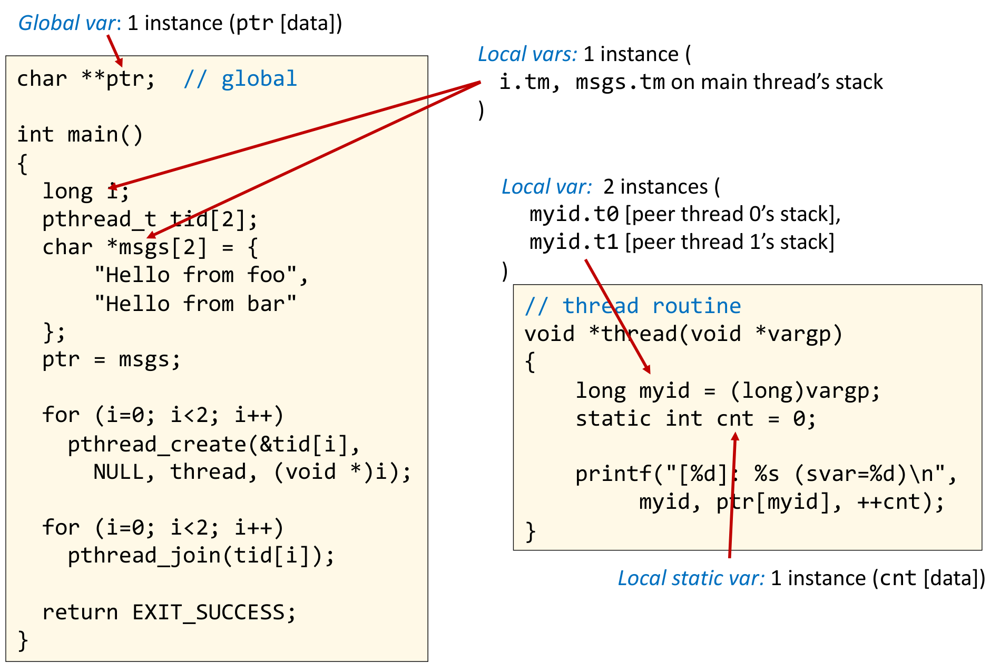
main, 오른쪽 상자가 스레드 루틴 thread이고, 파란 기울임 글씨가 변수의 종류, 빨간 화살표가 그 주석이 가리키는 선언입니다. 왼쪽 위의 Global var 주석은 전역 변수 ptr의 인스턴스가 하나이며 데이터 영역에 있다고 적고, 오른쪽 위의 Local vars 주석은 두 화살표로 main의 지역 변수 i와 msgs를 가리키며 각각 하나의 인스턴스 i.tm과 msgs.tm이 메인 스레드의 스택에 있다고 적습니다. 가운데의 Local var 주석은 thread의 지역 변수 myid에 인스턴스가 둘, 곧 피어 스레드 0의 스택에 있는 myid.t0과 피어 스레드 1의 스택에 있는 myid.t1이 있다고 적고, 오른쪽 아래의 Local static var 주석은 static int cnt의 인스턴스가 하나이며 데이터 영역에 있다고 적습니다. 같은 이름의 변수라도 종류에 따라 인스턴스 수가 달라지고, 공유 여부는 바로 이 인스턴스를 몇 개의 스레드가 참조하느냐로 정해진다는 것을 2.7절의 표로 넘어가기 전에 한 장으로 보여 주는 그림입니다.슬라이드는 인스턴스를 구별하려고 변수 이름 뒤에 그것이 놓인 스택의 주인을 붙입니다. .tm은 메인 스레드, .t0과 .t1은 피어 스레드 0과 1입니다. 그림의 주석을 표로 옮기면 다음과 같습니다.
| 변수 | 종류 | 인스턴스 | 놓인 곳 |
|---|---|---|---|
ptr |
전역 변수 | 1개 | 데이터 영역 |
i, msgs |
main의 지역 변수 |
1개씩: i.tm, msgs.tm |
메인 스레드의 스택 |
myid |
thread의 지역 변수 |
2개: myid.t0, myid.t1 |
피어 스레드 0, 1의 스택 |
cnt |
지역 정적 변수 | 1개 | 데이터 영역 |
main은 메인 스레드가 한 번만 실행하므로 그 지역 변수는 인스턴스가 하나이고,thread는 두 피어 스레드가 각각 실행하므로myid는 둘입니다.- 이 슬라이드의
printf는long인myid를%d로 찍고 있는데, 2.4–2.5절의 코드처럼%ld가 맞습니다.
3. 상호 배제 (Mutual Exclusion)
2장에서 무엇이 공유되는지를 가려냈으니, 이제 공유 변수를 여러 스레드가 동시에 고칠 때 무슨 일이 생기는지 봅니다.
3.1 badcnt.c: 부적절한 동기화 (badcnt.c: Improper Synchronization)
두 스레드가 전역 변수 cnt를 각각 niters번씩 1 늘리는 프로그램입니다.
volatile long cnt = 0; // global
int main(int argc, char **argv) {
long niters = atol(argv[1]);
pthread_t tid1, tid2;
pthread_create(&tid1, NULL,
thread, &niters);
pthread_create(&tid2, NULL,
thread, &niters);
pthread_join(tid1, NULL);
pthread_join(tid2, NULL);
// check result
if (cnt != (2 * niters))
printf("BOOM! cnt=%ld\n", cnt);
else
printf("OK cnt=%ld\n", cnt);
return EXIT_SUCCESS;
}// thread routine
void *thread(void *vargp)
{
long niters = *((long*)vargp);
for (long i=0; i<niters; i++)
cnt++;
return NULL;
}$ ./badcnt 10000
OK cnt=20000
$ ./badcnt 10000
BOOM! cnt=13051cnt는 20,000이어야 합니다. 그런데 같은 명령을 두 번 실행했더니 한 번은 맞고, 한 번은 13,051이 나왔습니다. 무엇이 잘못되었을까요?- 두 스레드에 같은
&niters를 넘기는 것은 2.3절과 달리 문제가 되지 않습니다.niters는 두 스레드가 읽기만 하고 메인 스레드도 그 뒤로 고치지 않으므로, 언제 읽든 같은 값을 얻습니다. 공유 자체가 아니라 공유 변수를 고치는 것이 문제의 핵심입니다. - 슬라이드의
"BOOM! cnt=%ld\n"은 닫는 따옴표가 둥근 따옴표(”)로 들어가 있어 그대로는 컴파일되지 않으므로 곧은 따옴표로 바꾸어 옮겼습니다.
3.2 카운터 반복문의 어셈블리 코드 (Assembly Code for Counter Loop)
원인을 보려면 C 한 줄 아래로 내려가야 합니다. 스레드 \(i\)의 카운터 반복문과, 그에 대응하는 x86-64 어셈블리는 다음과 같습니다(오른쪽 주석은 이 글에서 덧붙인 것입니다).
for (long i=0; i < niters; i++)
cnt++; movq (%rdi),%rcx # H: rcx = niters (*vargp)
movq $0,%rdx # rdx = i = 0
cmpq %rcx,%rdx # i >= niters 이면
jge .L13 # 반복문을 건너뛴다
.L11:
movq cnt(%rip),%rax # L: rax = cnt
incq %rax # U: rax = rax + 1
movq %rax,cnt(%rip) # S: cnt = rax
incq %rdx # T: i++
cmpq %rcx,%rdx # i < niters 이면
jl .L11 # 다시 .L11로
.L13:슬라이드는 이 명령들을 다섯 부분으로 묶고, 스레드 \(i\)의 각 부분을 아래첨자로 구별합니다.
| 부분 | 명령 | 하는 일 | cnt와의 관계 |
|---|---|---|---|
| \(H_i\) (Head) | movq, movq, cmpq, jge |
반복문 준비: niters를 읽고 i = 0, 조건 검사 |
건드리지 않음 |
\(L_i\) (Load cnt) |
movq cnt(%rip),%rax |
공유 변수 cnt를 레지스터 %rax로 적재 |
읽기 |
\(U_i\) (Update cnt) |
incq %rax |
레지스터의 값을 1 늘림 | 레지스터만 바뀜 |
\(S_i\) (Store cnt) |
movq %rax,cnt(%rip) |
레지스터의 값을 cnt에 저장 |
쓰기 |
| \(T_i\) (Tail) | incq, cmpq, jl |
i++와 조건 검사 |
건드리지 않음 |
- 핵심은 C의
cnt++한 줄이 적재(\(L\)) · 갱신(\(U\)) · 저장(\(S\)) 세 명령이라는 것입니다. 갱신은 메모리가 아니라 각 스레드의 레지스터에서 일어나고, 그 레지스터는 2.2절에서 본 대로 스레드마다 따로 있습니다. - 그래서 한 스레드가 \(L\)로 값을 읽어 간 뒤 \(S\)로 써넣기 전에 다른 스레드가 끼어들면, 두 스레드가 같은 옛 값을 바탕으로 계산하게 됩니다. 3.3절에서 이것을 명령 단위로 따라갑니다.
volatile은 원자성을 주지 않습니다
cnt를 volatile로 선언한 것은 컴파일러가 cnt를 레지스터에 붙잡아 두지 못하게, 곧 반복할 때마다 메모리에서 읽고 메모리에 쓰게 하려는 것입니다. 이 글을 쓰며 x86-64용 clang(-O2)으로 컴파일해 보니, volatile을 빼면 반복문 전체가 addq %rax, cnt(%rip) 한 명령으로 줄어 경쟁이 드러날 틈이 거의 사라졌습니다.
그러나 volatile이 \(L\) · \(U\) · \(S\)를 하나로 묶어 주지는 않습니다. 같은 clang은 volatile 판에서 cnt++ 하나를 incq cnt(%rip) 한 명령으로 만들었는데, 메모리를 읽고 고쳐 다시 쓰는 이 명령도 lock 접두사가 없으면 다른 코어에서 실행되는 같은 명령과 섞일 수 있습니다. 단일 코어에서는 인터럽트가 명령 경계에서만 처리되므로 명령 하나는 끊기지 않지만, 슬라이드의 코드처럼 세 명령으로 나뉘어 있으면 그 사이에서 문맥 교환이 일어날 수 있습니다. 명령의 개수와 상관없이, 공유 변수의 갱신을 원자적으로 만드는 것은 4장의 동기화입니다.
3.3 동시 실행 (Concurrent Execution)
핵심 아이디어: 일반적으로 순차적으로 일관된(sequentially consistent) 번갈아 실행은 어느 것이든 일어날 수 있지만, 그중 일부는 예상 밖의 결과를 냅니다. 순차적으로 일관된 실행이란 각 스레드의 명령은 코드에 적힌 순서대로 실행되고, 두 스레드의 명령은 그 순서를 지키며 하나의 줄로 섞인 실행을 말합니다. 표기는 다음과 같습니다.
- \(I_i\)는 스레드 \(i\)가 명령 \(I\)를 실행한다는 뜻입니다. 예를 들어 \(L_1\)은 스레드 1의 적재입니다.
%rax는 스레드마다 따로 있으므로, 표에서는 스레드 1과 스레드 2의%rax를 열을 나누어 적습니다.
슬라이드의 표는 각 행에서 그 명령을 실행한 스레드의 %rax만 적고, 다른 스레드의 칸과 \(H\)를 실행한 직후처럼 의미 있는 값이 없는 칸은 –로 둡니다. 슬라이드에서 초록색으로 칠한 행은 스레드 1의 임계 구역, 하늘색 행은 스레드 2의 임계 구역(3.6절에서 정의)으로, 아래 표의 마지막 열에 옮겨 적었습니다.
① 올바른 순서 — 스레드 1이 \(L_1, U_1, S_1\)을 모두 마친 뒤에 스레드 2가 \(L_2\)를 실행합니다.
| 스레드 | 명령 | 스레드 1의 %rax |
스레드 2의 %rax |
cnt |
비고 |
|---|---|---|---|---|---|
| 1 | \(H_1\) | – | – | 0 | |
| 1 | \(L_1\) | 0 | – | 0 | 스레드 1 임계 구역 |
| 1 | \(U_1\) | 1 | – | 0 | 스레드 1 임계 구역 |
| 1 | \(S_1\) | 1 | – | 1 | 스레드 1 임계 구역 |
| 2 | \(H_2\) | – | – | 1 | |
| 2 | \(L_2\) | – | 1 | 1 | 스레드 2 임계 구역 |
| 2 | \(U_2\) | – | 2 | 1 | 스레드 2 임계 구역 |
| 2 | \(S_2\) | – | 2 | 2 | 스레드 2 임계 구역 |
| 2 | \(T_2\) | – | 2 | 2 | |
| 1 | \(T_1\) | 1 | – | 2 | OK |
두 스레드가 cnt를 한 번씩 늘렸고 결과는 2입니다. 두 임계 구역이 서로 겹치지 않았기 때문입니다.
② 잘못된 순서 — 슬라이드는 “두 스레드가 카운터를 늘렸는데 결과가 2가 아니라 1”인 순서를 보여 줍니다.
| 스레드 | 명령 | 스레드 1의 %rax |
스레드 2의 %rax |
cnt |
비고 |
|---|---|---|---|---|---|
| 1 | \(H_1\) | – | – | 0 | |
| 1 | \(L_1\) | 0 | – | 0 | 스레드 1 임계 구역 |
| 1 | \(U_1\) | 1 | – | 0 | 스레드 1 임계 구역 |
| 2 | \(H_2\) | – | – | 0 | |
| 2 | \(L_2\) | – | 0 | 0 | 스레드 2 임계 구역 |
| 1 | \(S_1\) | 1 | – | 1 | 스레드 1 임계 구역 |
| 1 | \(T_1\) | 1 | – | 1 | |
| 2 | \(U_2\) | – | 1 | 1 | 스레드 2 임계 구역 |
| 2 | \(S_2\) | – | 1 | 1 | 스레드 2 임계 구역 |
| 2 | \(T_2\) | – | 1 | 1 | Oops! |
스레드 2가 \(L_2\)로 cnt를 읽은 시점은 스레드 1이 \(S_1\)으로 1을 써넣기 전이므로, 스레드 2는 옛 값 0을 바탕으로 1을 계산해 저장합니다. 스레드 1의 갱신이 덮어써져 사라진 것이고, 이런 오류를 흔히 잃어버린 갱신(lost update)이라고 부릅니다.
③ 이 순서는 어떨까요? — 슬라이드는 일부 칸을 비워 두고 묻습니다. 빈칸을 앞의 두 표와 같은 규칙으로 채우면 다음과 같습니다.
| 스레드 | 명령 | 스레드 1의 %rax |
스레드 2의 %rax |
cnt |
비고 |
|---|---|---|---|---|---|
| 1 | \(H_1\) | – | – | 0 | |
| 1 | \(L_1\) | 0 | – | 0 | 스레드 1 임계 구역 |
| 2 | \(H_2\) | – | – | 0 | |
| 2 | \(L_2\) | – | 0 | 0 | 스레드 2 임계 구역 |
| 2 | \(U_2\) | – | 1 | 0 | 스레드 2 임계 구역 |
| 2 | \(S_2\) | – | 1 | 1 | 스레드 2 임계 구역 |
| 1 | \(U_1\) | 1 | – | 1 | 스레드 1 임계 구역 |
| 1 | \(S_1\) | 1 | – | 1 | 스레드 1 임계 구역 |
| 1 | \(T_1\) | 1 | – | 1 | |
| 2 | \(T_2\) | – | 1 | 1 | Oops! |
이번에는 스레드 2가 먼저 저장을 끝냈지만, 스레드 1이 그보다 앞서 읽어 둔 0을 바탕으로 1을 써넣어 스레드 2의 갱신을 덮어씁니다. ②와 ③은 겉보기 순서가 꽤 다른데도 같은 이유로 틀립니다. 한 스레드가 읽고 쓰는 사이에 다른 스레드의 읽기나 쓰기가 끼어든 것입니다. 이런 순서를 일일이 표로 따지는 대신, 슬라이드는 진행 그래프(progress graph)로 동작을 분석할 수 있다고 말하며 다음 절로 넘어갑니다.
3.4 진행 그래프 (Progress Graphs)
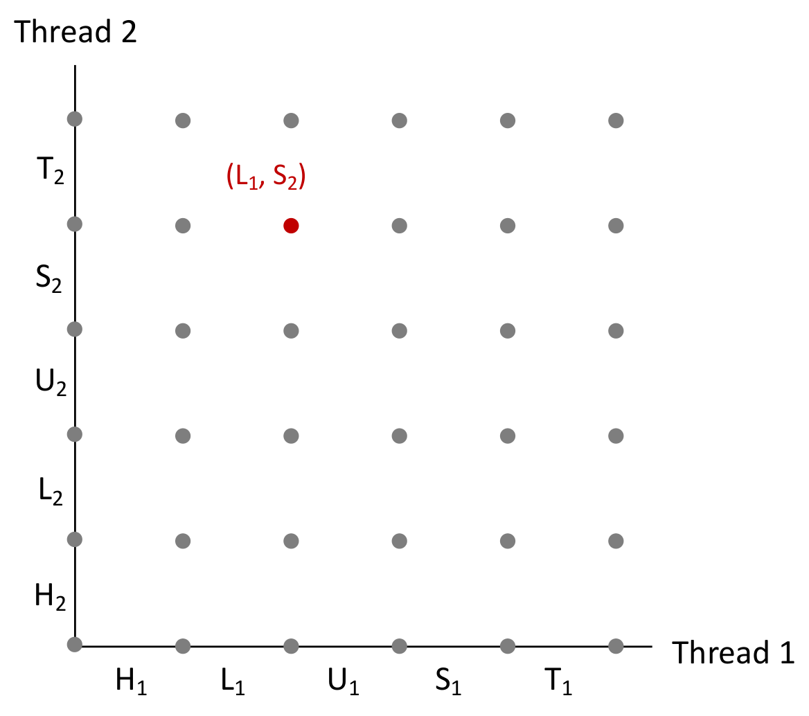
- 진행 그래프(progress graph)는 동시에 실행되는 스레드들의 이산적인 실행 상태 공간(execution state space)을 그린 것입니다.
- 각 축은 한 스레드의 명령들이 실행되는 순차적 순서에 대응합니다.
- 각 점은 가능한 실행 상태(execution state) \((\mathrm{Inst}_1, \mathrm{Inst}_2)\)에 대응합니다.
- 예: \((L_1, S_2)\)는 스레드 1이 \(L_1\)을 마쳤고 스레드 2가 \(S_2\)를 마친 상태입니다.
- 점의 좌표는 “각 스레드가 어디까지 왔는가”입니다. 스레드마다 명령이 다섯 개이므로 각 축에는 0개부터 5개까지 마친 여섯 위치가 있고, 상태는 모두 \(6 \times 6 = 36\)개입니다.
- 스레드가 \(n\)개면 \(n\)차원 격자가 되지만, 원리는 같습니다. 이 강의는 두 스레드만 다루므로 평면에 그릴 수 있습니다.
3.5 진행 그래프의 궤적 (Trajectories in Progress Graphs)
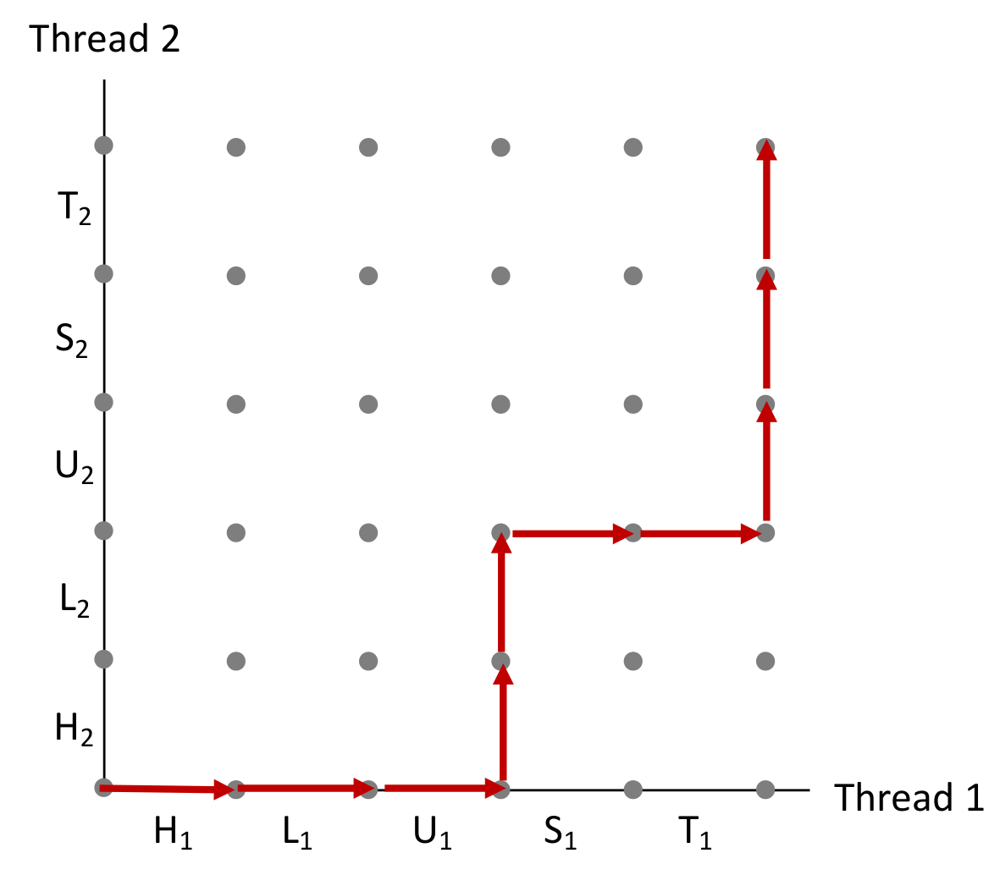
cnt가 1로 끝난 두 번째 표의 순서와 같습니다. 화살표가 오른쪽과 위쪽으로만 한 칸씩 움직인다는 점이, 한순간에는 한 스레드의 명령 하나만 실행되고 이미 실행한 명령은 되돌릴 수 없다는 합법적 상태 전이의 조건을 나타냅니다.- 궤적(trajectory)은 스레드들의 가능한 동시 실행 하나를 나타내는 합법적인 상태 전이들의 나열입니다.
- 예: \(H_1, L_1, U_1, H_2, L_2, S_1, T_1, U_2, S_2, T_2\) — 3.3절 ②의 순서입니다.
- 합법적인 전이는 한 번에 한 스레드가 명령 하나를 실행하는 것, 곧 오른쪽(스레드 1)이나 위쪽(스레드 2)으로 한 칸 가는 것뿐입니다. 두 스레드가 같은 순간에 한 걸음씩 가는 대각선 이동이나, 왼쪽 · 아래로 되돌아가는 이동은 없습니다.
그러면 가능한 궤적은 몇 개일까요? 원점에서 오른쪽 위 끝까지 가려면 오른쪽으로 5칸, 위로 5칸, 모두 10칸을 가야 하고, 궤적 하나는 그 10번의 이동 가운데 어느 5번을 오른쪽으로 갈지 고르는 것과 같습니다.
\[ \#\{\text{궤적}\} = \binom{10}{5} = \frac{10!}{5!\,5!} = 252 \]
명령 다섯 개짜리 두 스레드만으로도 서로 다른 실행 순서가 252가지 생기는 셈입니다. 이것을 일일이 표로 확인할 수는 없으므로, 다음 절은 “어떤 궤적이 틀리는가”를 그래프 위의 영역으로 판정합니다.
3.6 임계 구역과 안전하지 않은 영역 (Critical Sections and Unsafe Regions)
슬라이드 두 장이 같은 그래프 위에서 정의를 하나씩 쌓아 갑니다. 첫 장의 내용은 다음과 같습니다.
- \(L\), \(U\), \(S\)는 공유 변수
cnt에 대한 임계 구역(critical section)을 이룹니다. - (어떤 공유 변수에 대한) 임계 구역의 명령들은 번갈아 실행되어서는 안 됩니다.
- 그런 번갈아 실행이 일어나는 상태들의 집합이 안전하지 않은 영역(unsafe region)을 이룹니다.
15강 5.5절에서는 시그널 핸들러와 주 프로그램 사이의 경쟁 조건을 다루며 임계 구역을 “끊김 없이 실행되어야 하는 프로그램의 부분”으로 정의했습니다. 여기서는 같은 개념을 두 스레드 사이에 적용합니다. 두 번째 슬라이드는 이 그래프 위에 궤적 두 개를 그립니다.
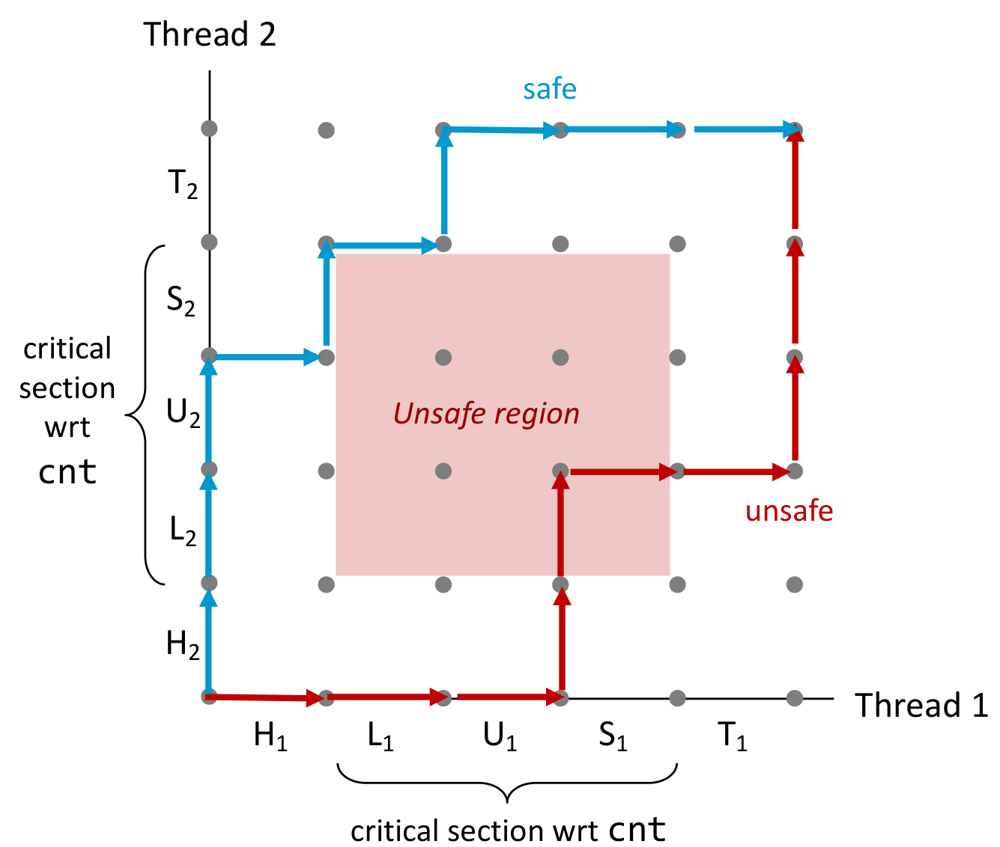
cnt에 대한 임계 구역이라고 표시하고, 두 임계 구역이 겹치는 가운데의 분홍 사각형이 Unsafe region(안전하지 않은 영역)입니다. 이 영역 안에는 두 스레드가 모두 \(L\)을 마치고 아직 \(S\)를 마치지 않은 네 상태 \((L_1, L_2), (L_1, U_2), (U_1, L_2), (U_1, U_2)\)가 있고, 영역의 테두리 위에 놓인 점들은 영역에 포함되지 않습니다. 파란 궤적 safe는 \(H_2, L_2, U_2, H_1, S_2, L_1, T_2, U_1, S_1, T_1\) 순서로 영역의 왼쪽 변과 위쪽 변을 스치며 돌아가므로 안전하고, 빨간 궤적 unsafe는 3.5절의 순서대로 \(U_1\) 뒤에 \(H_2, L_2\)를 실행해 영역 안의 상태 \((U_1, L_2)\)에 들어가므로 안전하지 않으며 cnt가 1로 끝납니다. 같은 일을 하는 두 실행의 결과가 갈리는 이유를 “임계 구역이 겹치는 영역에 들어갔는가”라는 기하학적 조건 하나로 바꾸어 보여 주는 것이 이 그림의 요점입니다.- 정의: 궤적이 안전하다(safe)는 것은, 그 궤적이 어떤 안전하지 않은 영역에도 들어가지 않는다는 뜻입니다. 안전하지 않은 영역의 경계를 따라 스치는 것은 허용됩니다.
- 주장: 궤적이 (
cnt에 대해) 올바르다 ⟺ 안전하다.
- 안전하지 않은 영역의 점들은 두 스레드가 모두 \(L\)을 실행했지만 아직 \(S\)를 실행하지 않은 상태, 곧 두 스레드가 동시에 임계 구역 안에 있는 상태입니다. 이때 두 스레드의 레지스터에는 같은 옛 값이 들어 있으므로, 둘 중 나중에 저장하는 쪽이 먼저 저장한 쪽의 갱신을 덮어씁니다.
- 경계 위의 점, 예를 들어 파란 궤적이 지나는 \((H_1, U_2)\)와 \((L_1, S_2)\)에서는 한 스레드만 임계 구역 안에 있으므로 문제가 없습니다. 3.4절 그림에서 빨갛게 표시된 바로 그 점 \((L_1, S_2)\)가 여기서는 안전한 궤적이 지나는 경계 위의 점입니다.
- 주장이 정말 성립하는지 이 글을 쓰며 252가지 궤적을 모두 실행해 보았습니다. 각 순서대로 \(L\) · \(U\) · \(S\)를 흉내 내어 최종
cnt를 계산하고, 따로 그 궤적이 안전하지 않은 영역의 네 상태 가운데 하나를 지나는지 검사했더니,cnt가 2로 끝나는 궤적은 52개였고 그 52개가 안전한 궤적과 정확히 일치했습니다. 나머지 200개는 모두cnt가 1로 끝납니다. - 다만 252가지 중 200가지가 틀린다고 해서 실행의 80%가 틀린다는 뜻은 아닙니다. 실제 스케줄러는 한 스레드에게 수많은 명령을 연달아 실행할 시간을 주므로 궤적들이 고르게 나오지 않고, 3.1절에서 같은 명령이 한 번은 맞고 한 번은 틀린 것처럼 결과가 실행마다 달라질 뿐입니다.
3.7 상호 배제 강제하기 (Enforcing Mutual Exclusion)
- 질문: 어떻게 하면 안전한 궤적을 보장할 수 있을까요?
- 답: 스레드들의 실행을 동기화(synchronize)해서, 안전하지 않은 궤적이 아예 생기지 않게 해야 합니다.
- 다시 말해, 임계 구역에 대한 상호 배타적 접근(mutually exclusive access)을 보장해야 합니다.
- 고전적인 해법: 세마포어(semaphore) (에츠허르 다익스트라, Edsger Dijkstra) → 4장
- 다른 접근 (이 강의의 범위 밖):
- Pthreads의 뮤텍스와 조건 변수(mutex and condition variables)
- Java의 모니터(monitor)
어떤 순서로 번갈아 실행할지는 커널의 스케줄러가 정하므로 프로그램이 직접 고를 수 없습니다. 대신 임계 구역 앞에 “지금 들어가도 되는가”를 확인하는 장치를 두어, 안전하지 않은 영역으로 들어가는 이동 자체를 막을 수는 있습니다. 그 장치가 4장의 세마포어입니다.
4. 세마포어 (Semaphores)
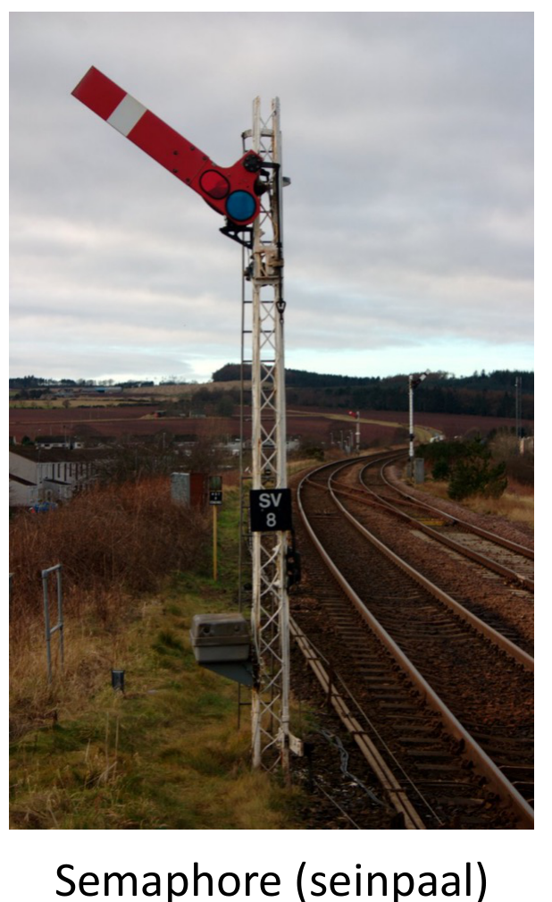
4.1 세마포어 (Semaphores)
- 세마포어(semaphore) \(s\): 음이 아닌 전역 정수 동기화 변수입니다.
- 세마포어는 원자적인 \(P\) 연산과 \(V\) 연산으로만 조작합니다.
- \(P(s)\):
[ while (s == 0) wait(); s--; ]— “passering”(통과; 시험하고 기다리기) - \(V(s)\):
[ s++; ]— “vrijgave”(풀어 주기; 증가, post)
- \(P(s)\):
- 대괄호
[ ]사이의 연산은 OS 커널이 나눌 수 없게(indivisibly) 실행되도록 보장합니다. 이른바 원자적 연산(atomic operation)입니다. - 세마포어 불변식(semaphore invariant): \(s \ge 0\)
원자성이 보장된다는 것은 구체적으로 다음 두 가지를 뜻합니다.
- 한 번에 하나의 \(P\)나 \(V\)만 \(s\)를 바꿀 수 있습니다. 3장에서 본
cnt++의 문제, 곧 읽고 쓰는 사이에 다른 갱신이 끼어드는 일이 세마포어 자체에는 일어나지 않습니다. - \(P\)의
while반복이 끝나면, 그 \(P\)만 \(s\)를 줄일 수 있습니다. 두 스레드가 동시에 \(s = 1\)을 보고 둘 다 통과해 \(s\)를 −1로 만드는 일이 없으므로, 불변식 \(s \ge 0\)이 항상 지켜집니다.
슬라이드는 \(P\)를 네덜란드어 passering(통과), \(V\)를 vrijgave(풀어 줌)로 풀이합니다. 교재(CS:APP)는 같은 두 글자를 proberen(시험하다)과 verhogen(증가시키다)에서 왔다고 설명하는데, 어느 쪽으로 읽든 \(P\)는 “될 때까지 기다렸다가 지나가기”, \(V\)는 “풀어 주기”입니다. 4.2절의 POSIX 이름 sem_wait와 sem_post가 이 두 동작을 그대로 옮긴 것입니다.
슬라이드는 “BTW…how does the kernel do that?”이라고 질문만 던집니다. 대괄호 안의 동작을 원자적으로 만드는 일은 결국 하드웨어에 기댑니다. 단일 프로세서라면 그동안 인터럽트를 막는 방법도 있지만, 여러 코어가 같은 메모리를 건드리는 멀티코어에서는 x86-64의 lock 접두사가 붙은 명령(예: lock cmpxchg)처럼 다른 코어가 끼어들 수 없는 읽기-수정-쓰기 명령이 필요합니다.
또 while (s == 0) wait();의 wait()는 개념을 나타낸 것으로, 실제 구현은 값을 계속 들여다보며 도는 바쁜 대기(busy waiting) 대신 스레드를 재웁니다. 리눅스의 glibc는 세마포어 값을 원자적 명령으로 바꾸고, 값이 0이라 기다려야 할 때만 futex 시스템 호출로 커널에 들어가 잠들며, \(V\)는 기다리는 스레드가 있을 때 futex로 깨웁니다. 기다릴 필요가 없는 \(P\)와 \(V\)는 커널에 들어가지 않습니다.
4.2 Pthread 세마포어 API (Pthread Semaphore API)
POSIX 세마포어는 헤더 <semaphore.h>의 sem_t 타입과 다음 함수들로 씁니다.
| 연산 | API | 설명 |
|---|---|---|
| 계수 세마포어 만들기 (Create counting semaphore) | int sem_init(sem_t *sem, int pshared, unsigned int val) |
sem = val |
| 세마포어 기다리기 (Wait on semaphore) | int sem_wait(sem_t *sem) |
P(sem) |
int sem_trywait(sem_t *sem) |
P(sem) |
|
int sem_timedwait(sem_t *sem, struct timespec *timeout) |
P(sem) |
|
| 세마포어 풀어 주기 (Release semaphore) | int sem_post(sem_t *sem) |
V(sem) |
sem_init의pshared가 0이면 그 세마포어를 한 프로세스의 스레드들 사이에서 씁니다. 이 강의의 예제는 모두 0입니다. 0이 아니면 프로세스 사이에서 쓰는 세마포어이며, 이때는 여러 프로세스가 볼 수 있는 공유 메모리에 놓여야 합니다.sem_trywait는 기다리지 않는 \(P\)입니다. 값이 0이면 막히는 대신 곧바로 −1을 돌려주고errno를EAGAIN으로 설정합니다.sem_timedwait는 기다리는 시간에 상한을 둡니다. 실제 원형의 둘째 인자는const struct timespec *abs_timeout으로, “몇 초 동안”이 아니라 “언제까지”를 나타내는 Epoch 기준 절대 시각입니다. 그 시각이 지나도록 값을 줄이지 못하면ETIMEDOUT으로 실패합니다.- 모든 함수는 성공하면 0, 실패하면 −1을 돌려주고
errno를 설정합니다.
슬라이드는 이 함수들을 감싼 래퍼 함수(wrapper functions) P와 V를 정의하고, 이후의 모든 코드는 이 둘을 씁니다. 슬라이드의 문자열을 감싼 둥근 따옴표(“ ”)는 C 컴파일러가 받지 않으므로 곧은 따옴표로 바꾸어 옮겼습니다.
void P(sem_t *s) {
if (sem_wait(s) < 0) {
perror("Cannot wait on semaphore"); exit(EXIT_FAILURE);
}
}
void V(sem_t *s) {
if (sem_post(s) < 0) {
perror("Cannot post semaphore"); exit(EXIT_FAILURE);
}
}- 18강 3.1절에서 본 교재의 대문자 래퍼(
Open,Close등)와 같은 발상으로, 실패하면 이유를 출력하고 프로그램을 끝내 호출하는 쪽의 코드를 짧게 만듭니다. sem_wait는 시그널 핸들러에 끊기면 −1을 돌려주고errno를EINTR로 설정합니다(15강 5.4절의 끊긴 시스템 호출). 이 래퍼는 그 경우에도 프로그램을 끝내므로, 시그널을 함께 쓰는 프로그램이라면EINTR일 때 다시 부르도록 고쳐야 합니다.
sem_init이 동작하지 않습니다
이 강의의 예제를 macOS에서 그대로 돌리면 세마포어가 동작하지 않습니다. 이 글을 쓰며 확인해 보니 macOS의 sem_init은 헤더에 deprecated로 표시되어 있고, 호출하면 −1과 ENOSYS(Function not implemented)를 돌려주며, 이어지는 sem_wait는 EBADF로 실패했습니다. 그러면 위의 P는 Cannot wait on semaphore: Bad file descriptor를 출력하고 프로그램을 끝냅니다. 이름 없는 세마포어(sem_init으로 만드는 세마포어)를 쓰는 이 강의의 예제는 리눅스에서 실행해야 합니다.
4.3 badcnt.c 다시 보기 (badcnt.c: Improper Synchronization)
슬라이드는 3.1절의 badcnt.c를 그대로 다시 보여 주며 묻습니다. 세마포어로 이것을 어떻게 고칠 수 있을까요? 고칠 곳은 3.6절에서 찾았습니다. cnt에 대한 임계 구역 \(L, U, S\), 곧 C의 cnt++ 한 줄에 두 스레드가 동시에 들어가지 못하게 하면 됩니다.
4.4 세마포어로 상호 배제하기 (Using Semaphores for Mutual Exclusion)
기본 아이디어는 두 줄입니다.
- 공유 변수마다(또는 서로 관련된 공유 변수 묶음마다) 초깃값이 1인 고유한 세마포어
mutex를 하나씩 연결합니다. - 그에 해당하는 임계 구역을
P(mutex)와V(mutex)로 감쌉니다.
초깃값이 1이면, 처음 P를 실행한 스레드만 통과하고(1 → 0), 그동안 P에 도착한 다른 스레드는 값이 0이라 기다립니다. 임계 구역을 마친 스레드가 V로 값을 1로 되돌리면 기다리던 스레드 하나가 통과합니다. 3장 첫머리의 표지판으로 말하면 1은 “공실”, 0은 “사용중”입니다. 슬라이드는 이에 쓰이는 용어를 정리합니다.
| 용어 | 뜻 |
|---|---|
| 이진 세마포어 (binary semaphore) | 값이 항상 0 또는 1인 세마포어 |
| 뮤텍스 (mutex) | 상호 배제(mutual exclusion)에 쓰는 이진 세마포어. 이름은 mutual exclusion의 앞 글자들에서 왔습니다 |
| ↳ \(P\) 연산 | 뮤텍스를 “잠근다(locking)” |
| ↳ \(V\) 연산 | 뮤텍스를 “푼다(unlocking, releasing)” |
| ↳ 뮤텍스를 “쥐고 있다(holding)” | 잠갔고 아직 풀지 않은 상태 |
| 계수 세마포어 (counting semaphore) | 사용 가능한 자원 집합의 개수를 세는 카운터로 쓰는 세마포어 |
“이진”은 sem_t의 종류가 아니라 쓰는 방식이라는 점에 주의합니다. 같은 sem_t를 초깃값 1로 만들고 \(P\)와 \(V\)를 반드시 짝지어 부르는 규율이 값을 0과 1에 묶어 둘 뿐이며, 짝이 맞지 않게 \(V\)를 한 번 더 부르면 값이 2가 되어 두 스레드가 동시에 임계 구역에 들어갈 수 있습니다. 계수 세마포어는 5.3절의 생산자-소비자 문제에서 “빈 칸이 몇 개인가”, “꺼낼 항목이 몇 개인가”를 세는 데 쓰입니다.
4.5 goodcnt.c: 올바른 동기화 (goodcnt.c: Proper Synchronization)
공유 변수 cnt에 뮤텍스를 하나 정의하고 초기화합니다. sem_init은 스레드를 만들기 전에 main에서 한 번 부릅니다.
volatile long cnt = 0; // counter
sem_t mutex; // semaphore that protects cnt
sem_init(&mutex, 0, 1); // mutex = 1그리고 임계 구역을 \(P\)와 \(V\)로 감쌉니다.
for (long i=0; i<niters; i++) {
P(&mutex);
cnt++;
V(&mutex);
}$ ./goodcnt 10000
OK cnt=20000
$ ./goodcnt 10000
OK cnt=20000이제 cnt++의 \(L\) · \(U\) · \(S\)는 한 번에 한 스레드만 실행하므로, 몇 번을 돌려도 20,000이 나옵니다.
성능은 어떨까요? 슬라이드는 질문만 남기고 5.5.2절에서 “동기화 연산은 코드를 느리게 만든다”고 답합니다. 원래 반복문의 몸체는 명령 세 개였는데, 이제 반복마다 세마포어 연산이 두 번 붙습니다. 각 연산은 적어도 하나의 원자적 읽기-수정-쓰기 명령을 쓰고, 두 스레드가 같은 뮤텍스를 두고 다툴 때는 4.1절의 팁에서 본 대로 커널에 들어가 잠들고 깨어나는 비용까지 더해집니다. 그래서 이 프로그램은 정확해진 대신 badcnt.c보다 훨씬 느립니다. 이런 비용을 줄이는 흔한 방법은 동기화의 빈도를 줄이는 것입니다. 예를 들어 각 스레드가 자기 지역 변수에 개수를 모았다가 마지막에 한 번만 뮤텍스를 잡고 cnt에 더하면, 결과는 같으면서 \(P\)와 \(V\)는 스레드마다 한 번씩만 실행됩니다.
4.6 뮤텍스가 동작하는 이유 (Why Mutexes Work)
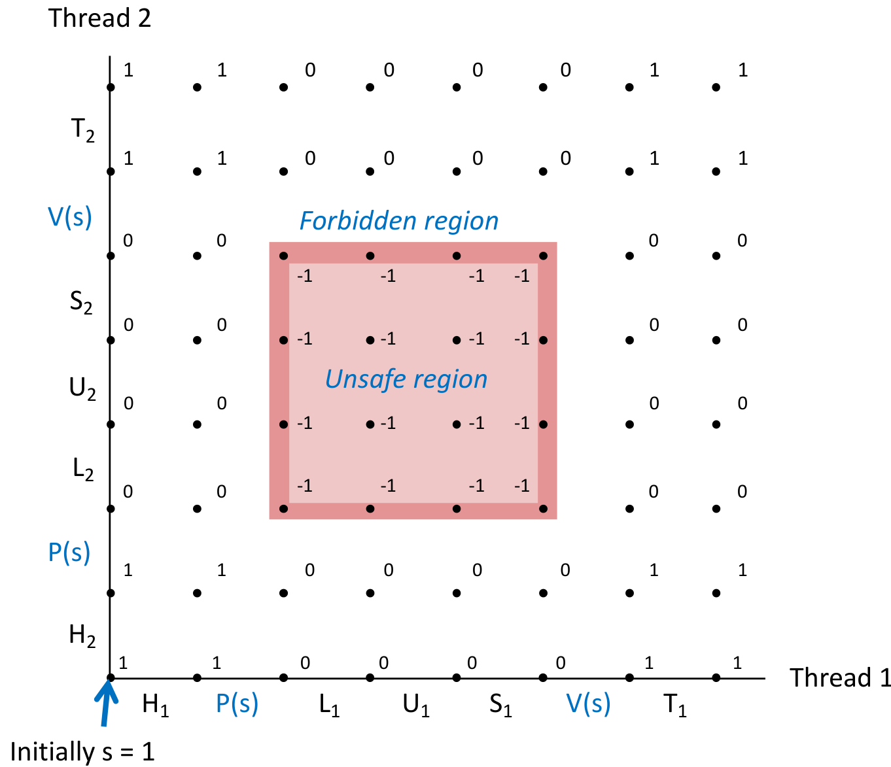
슬라이드의 설명은 두 문장입니다.
- 공유 변수에 대한 임계 구역을 세마포어 \(s\)(초깃값 1)에 대한 \(P\)와 \(V\) 연산으로 감싸서 상호 배타적 접근을 제공합니다.
- 세마포어 불변식은 금지 영역(forbidden region)을 만들고, 이 영역이 안전하지 않은 영역을 둘러싸므로 어떤 궤적도 안전하지 않은 영역에 들어갈 수 없습니다.
그림의 숫자가 어떻게 나오는지 식으로 정리해 보겠습니다. 상태 \((x, y)\)에서 스레드 \(i\)가 뮤텍스를 쥐고 있는지, 곧 \(P(s)\)는 지났고 \(V(s)\)는 아직 지나지 않았는지를 나타내는 지시 변수를 \(h_i \in \{0, 1\}\)이라 합시다. \(P\)는 값을 1 줄이고 \(V\)는 1 늘리므로, 초깃값 1에서 출발한 \(s\)의 값은 지금 뮤텍스를 쥔 스레드 수만큼 줄어 있습니다.
\[ s(x, y) = 1 - h_1(x) - h_2(y) = \begin{cases} 1, & \text{두 스레드 모두 쥐지 않음} \\ 0, & \text{한 스레드만 쥐고 있음} \\ -1, & \text{두 스레드가 모두 쥐고 있음} \end{cases} \]
- 불변식 \(s \ge 0\)은 마지막 경우, 곧 \(h_1 = h_2 = 1\)인 상태를 금지합니다. 이 상태들의 집합이 금지 영역이며, 그림에서 −1이 적힌 16개의 점입니다.
- 임계 구역 \(L, U, S\)는 \(P(s)\)와 \(V(s)\) 사이에 있으므로, 두 스레드가 모두 임계 구역 안에 있는 상태(안전하지 않은 영역)에서는 둘 다 반드시 뮤텍스를 쥐고 있습니다. 따라서 안전하지 않은 영역 ⊂ 금지 영역입니다.
- 실제 실행에서 이것은 다음처럼 나타납니다. 한 스레드가 뮤텍스를 쥔 채 임계 구역에 있을 때 다른 스레드가 \(P(s)\)를 실행하려 하면 \(s = 0\)이라 기다리게 되므로, 궤적은 금지 영역의 경계 앞에서 그쪽으로 나아가지 못하고, 뮤텍스를 쥔 스레드가 \(V(s)\)를 지날 때까지 그 스레드 쪽으로만 움직입니다. 그 결과 모든 궤적은 금지 영역을 돌아가고, 3.6절의 주장에 따라 모두 올바릅니다.
5. 동기화 (Synchronization)
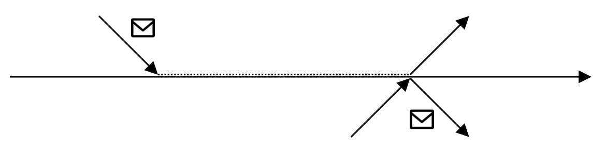
4장은 세마포어로 “한 번에 하나만” 들어가게 하는 법, 곧 상호 배제를 보였습니다. 이 장은 세마포어를 그보다 넓게, 스레드 사이의 순서를 맞추는 데 쓰는 법과, 그렇게 짠 동시성 프로그램이 마주치는 문제들을 다룹니다.
5.1 동시성 프로그램의 동기화 (Synchronization in Concurrent Programs)
이 단원의 목차 슬라이드는 다섯 주제를 나열하고, 주제가 바뀔 때마다 다시 나타나 지금 다루는 항목을 굵게 표시합니다.
- 생산자-소비자 문제 (Producer-consumer problem) → 5.2–5.3절
- 독자-저자 문제 (Readers-writers problem) → 5.4절
- 스레드 안전성 (Thread safety) → 5.5절
- 경쟁 (Races) → 5.6절
- 교착 상태 (Deadlocks) → 5.7절
앞의 둘은 세마포어로 푸는 고전적인 동기화 문제이고, 뒤의 셋은 스레드 프로그램을 짤 때 조심해야 할 함정입니다.
5.3 생산자-소비자 문제 (Producer-Consumer Problem)
5.3.1 공유 버퍼를 사이에 둔 두 스레드 (Producer-Consumer Problem)
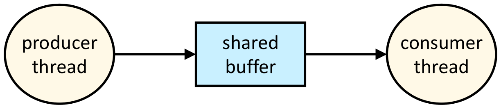
흔한 동기화 패턴은 다음과 같습니다.
- 생산자는 빈 칸을 기다렸다가, 버퍼에 항목을 넣고, 소비자에게 알립니다.
- 소비자는 항목을 기다렸다가, 버퍼에서 그것을 꺼내고, 생산자에게 알립니다.
예로는 다음이 있습니다.
- 멀티미디어 처리: 생산자가 MPEG 비디오 프레임을 만들고, 소비자가 그것을 화면에 그립니다(render).
- 이벤트 기반 그래픽 사용자 인터페이스(GUI): 생산자는 마우스 클릭 · 마우스 이동 · 키보드 입력을 감지해 그에 해당하는 이벤트를 버퍼에 넣고, 소비자는 버퍼에서 이벤트를 꺼내 화면을 그립니다.
버퍼를 두는 이유는 두 스레드의 속도 차이를 흡수하기 위해서입니다. 대신 이 문제에는 두 종류의 동기화가 필요합니다. 버퍼가 가득 차거나 비었을 때 상대를 기다리는 것(순서 정하기)과, 버퍼라는 공유 데이터를 두 스레드가 동시에 고치지 못하게 하는 것(상호 배제)입니다.
5.3.2 원소 하나짜리 버퍼 (Producer-Consumer on 1-element Buffer)
가장 작은 경우부터 봅니다. 버퍼에 항목 하나만 들어가는 생산자-소비자 프로그램입니다. 슬라이드의 …는 생략된 부분입니다.
#define NITERS 5
void *producer(void *arg);
void *consumer(void *arg);
struct {
int buf; // shared var
sem_t full; // sems
sem_t empty;
} shared;
// …
int main() {
pthread_t tid_producer;
pthread_t tid_consumer;
// initialize the semaphores */
sem_init(&shared.empty, 0, 1);
sem_init(&shared.full, 0, 0);
// Create threads and wait
pthread_create(&tid_producer, NULL,
producer, NULL);
pthread_create(&tid_consumer, NULL,
consumer, NULL);
pthread_join(tid_producer, NULL);
pthread_join(tid_consumer, NULL);
return EXIT_SUCCESS;
}처음에는 empty == 1, full == 0입니다. 두 스레드의 코드는 다음과 같습니다(소비자의 printf에 섞인 둥근 따옴표는 곧은 따옴표로 바꿨습니다).
// Producer Thread
void *producer(void *arg)
{
int i, item;
for (i=0; i<NITERS; i++) {
// produce item
item = i;
printf("produced %d\n", item);
// write item to buf
P(&shared.empty); // 빈 칸이 생길 때까지 기다린다
shared.buf = item;
V(&shared.full); // 소비자에게 "항목이 있다"고 알린다
}
return NULL;
}// Consumer Thread
void *consumer(void *arg)
{
int i, item;
for (i=0; i<NITERS; i++) {
// read item from buf
P(&shared.full); // 항목이 생길 때까지 기다린다
item = shared.buf;
V(&shared.empty); // 생산자에게 "빈 칸이 있다"고 알린다
// consume item
printf("consumed %d\n", item);
}
return NULL;
}empty는 “버퍼가 비어 있다(써도 된다)”,full은 “버퍼에 항목이 있다(읽어도 된다)”를 나타내는 이진 세마포어입니다. 처음에는 버퍼가 비어 있으므로empty = 1,full = 0입니다.- 생산자는
P(&shared.empty)로 버퍼가 빌 때까지 기다렸다가 쓰고V(&shared.full)로 소비자를 깨우며, 소비자는 그 반대로 합니다. 같은 세마포어에 대한 \(P\)와 \(V\)를 서로 다른 스레드가 부른다는 점이 4장의 뮤텍스와 다릅니다. 5.2절에서 말한 “이진 세마포어로 알리기”가 바로 이것입니다. - 두 세마포어 값의 합은 처음에 1이고, 어느 스레드가
P와V사이에 있는 동안만 0으로 줄어듭니다. 합이 음수가 될 수 없으므로 두 스레드가 동시에P와V사이에 있을 수 없고, 그래서 원소 하나짜리 버퍼에는 따로 뮤텍스가 필요 없습니다. - 그 결과 항목 0, 1, 2, 3, 4가 하나씩 차례로 건네집니다. 다만
printf가 세마포어 연산 바깥에 있으므로, 출력 줄의 순서는 실행할 때마다 조금씩 달라질 수 있습니다.
5.3.3 원소 n개짜리 버퍼와 sbuf 패키지 (Producer-Consumer on an n-element Buffer)
버퍼에 칸이 \(n\)개 있으면 다음이 필요합니다.
- 뮤텍스 하나와 계수 세마포어 둘
mutex: 버퍼에 대한 상호 배타적 접근을 강제합니다.slots: 버퍼의 사용 가능한 빈 칸 수를 셉니다.items: 버퍼의 사용 가능한 항목 수를 셉니다.
- 이를
sbuf라는 공유 버퍼 패키지로 구현합니다.
원소 하나짜리 버퍼에서는 두 세마포어가 상호 배제까지 해 주었지만, 칸이 여럿이면 생산자가 쓰는 동안 소비자가 다른 칸을 읽을 수 있어 그 효과가 사라집니다. 생산자와 소비자가 하나씩이라면 rear는 생산자만, front는 소비자만 고치므로 문제가 없지만, 5.3.4절의 서버처럼 같은 버퍼에서 여러 스레드가 꺼내 가거나 여러 스레드가 넣으면 여러 스레드가 같은 front나 rear를 동시에 늘리게 되어 3장의 문제가 다시 생깁니다. 그래서 sbuf는 버퍼에 대한 접근 자체를 뮤텍스로 감쌉니다.
선언 (sbuf.h) — 자료 구조와 인터페이스입니다.
typedef struct {
int *buf; // Buffer array
int n; // Maximum number of slots
int front; // buf[(front+1)%n] is first item
int rear; // buf[rear%n] is last item
sem_t mutex; // Protects accesses to buf
sem_t slots; // Counts available slots
sem_t items; // Counts available items
} sbuf_t;
void sbuf_init(sbuf_t *sp, int n);
void sbuf_deinit(sbuf_t *sp);
void sbuf_insert(sbuf_t *sp, int item);
int sbuf_remove(sbuf_t *sp);구현 (sbuf.c) ① 초기화와 정리
// Create an empty, bounded, shared FIFO buffer with n slots
void sbuf_init(sbuf_t *sp, int n)
{
sp->buf = calloc(n, sizeof(int));
sp->n = n; // Buffer holds max of n items
sp->front = sp->rear = 0; // Empty buffer iff front == rear
sem_init(&sp->mutex, 0, 1); // Binary semaphore for locking
sem_init(&sp->slots, 0, n); // Initially, buf has n empty slots
sem_init(&sp->items, 0, 0); // Initially, buf has zero items
}
// Clean up buffer sp
void sbuf_deinit(sbuf_t *sp)
{
free(sp->buf);
}구현 ② 항목 넣기
// Insert item onto the rear of shared buffer sp
void sbuf_insert(sbuf_t *sp, int item)
{
P(&sp->slots); // Wait for available slot
P(&sp->mutex); // Lock the buffer
sp->buf[(++sp->rear)%(sp->n)] = item; // Insert the item
V(&sp->mutex); // Unlock the buffer
V(&sp->items); // Announce available item
}구현 ③ 항목 꺼내기
// Remove and return the first item from buffer sp
int sbuf_remove(sbuf_t *sp)
{
int item;
P(&sp->items); // Wait for available item
P(&sp->mutex); // Lock the buffer
item = sp->buf[(++sp->front)%(sp->n)]; // Remove the item
V(&sp->mutex); // Unlock the buffer
V(&sp->slots); // Announce available slot
return item;
}세 함수를 함께 읽으면 다음과 같습니다.
- 세마포어의 역할:
slots는 처음에 \(n\),items는 0입니다. 넣는 쪽은P(&sp->slots)로 빈 칸 하나를 예약하고 다 넣은 뒤V(&sp->items)로 항목 하나가 생겼음을 알립니다. 꺼내는 쪽은 그 반대입니다. 그래서 언제나 “예약되지 않은 빈 칸 수 + 예약되지 않은 항목 수 ≤ \(n\)”이 유지되고, 버퍼가 가득 차면 넣는 쪽이, 비면 꺼내는 쪽이 기다립니다. front와rear: 두 값은 0에서 출발해 늘어나기만 하는 카운터이고, 칸을 고를 때만% n을 합니다.rear는 마지막으로 넣은 항목의 번호,front는 마지막으로 꺼낸 항목의 번호이므로, 버퍼 안의 항목 수는rear - front이고front == rear일 때 그리고 그때에만 버퍼가 빕니다. 첫 항목이buf[(front+1)%n], 마지막 항목이buf[rear%n]이라는 선언의 주석이 이 뜻입니다.- \(P\)의 순서: 두 함수 모두 계수 세마포어를 먼저, 뮤텍스를 나중에 잡습니다. 순서를 바꿔 뮤텍스를 먼저 잡으면, 버퍼가 가득 찬 상태에서 생산자가 뮤텍스를 쥔 채
slots를 기다리게 되고, 소비자는 그 뮤텍스를 얻지 못해 항목을 꺼낼 수 없으므로 둘 다 영원히 기다립니다. 결코 참이 되지 않을 조건을 기다리는, 5.7절에서 정의할 교착 상태입니다. sbuf_deinit은 버퍼 배열만 해제하고 세마포어는 따로 정리하지 않습니다. 세마포어를 정리하는sem_destroy도 있지만, 슬라이드의 코드는 이를 부르지 않습니다.
칸이 3개(\(n = 3\))인 버퍼에서 위치 변수가 어떻게 움직이는지 따라가 보면 다음과 같습니다.
| 동작 | front |
rear |
항목 수 (rear - front) |
쓰거나 읽은 칸 | slots |
items |
|---|---|---|---|---|---|---|
sbuf_init(sp, 3) |
0 | 0 | 0 | — | 3 | 0 |
sbuf_insert(sp, 10) |
0 | 1 | 1 | buf[1] ← 10 |
2 | 1 |
sbuf_insert(sp, 20) |
0 | 2 | 2 | buf[2] ← 20 |
1 | 2 |
sbuf_remove(sp) → 10 |
1 | 2 | 1 | buf[1] |
2 | 1 |
sbuf_insert(sp, 30) |
1 | 3 | 2 | buf[0] ← 30 |
1 | 2 |
sbuf_insert(sp, 40) |
1 | 4 | 3 | buf[1] ← 40 |
0 | 3 |
마지막 줄에서 항목 수가 3, slots가 0이 되었으므로 다음 sbuf_insert는 P(&sp->slots)에서 기다립니다. 이때 첫 항목은 buf[(1+1)%3] = buf[2]의 20, 마지막 항목은 buf[4%3] = buf[1]의 40으로, 넣은 순서대로 꺼내지는 FIFO 버퍼임을 확인할 수 있습니다.
5.3.4 사례 연구: 스레드를 미리 만들어 두는 동시성 서버 (Case Study: Prethreaded Concurrent Server)
sbuf를 실제로 쓰는 예로, 슬라이드는 스레드를 미리 만들어 두는(prethreaded) 동시성 서버를 봅니다.
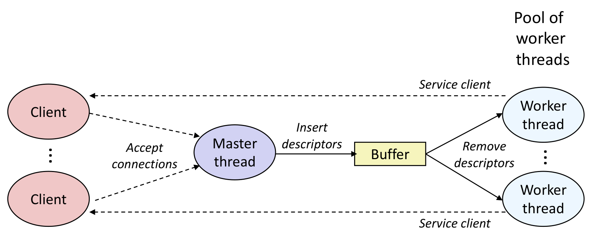
20강의 스레드 기반 echo 서버는 연결이 올 때마다 스레드를 새로 만들었습니다. 이 서버는 시작할 때 작업자 스레드를 정해진 수만큼 미리 만들어 두고, 마스터 스레드가 받은 연결을 버퍼를 통해 나눠 줍니다. 연결마다 스레드를 만드는 비용이 사라지고, 동시에 서비스하는 클라이언트 수도 작업자 스레드 수로 제한됩니다.
메인 스레드 (echoservert_pre.c)
sbuf_t sbuf; // shared buffer of connected descriptors
int main(int argc, char **argv)
{
int i, listenfd, connfd, port;
socklen_t clientlen = sizeof(struct sockaddr_in);
struct sockaddr_in clientaddr;
pthread_t tid;
port = atoi(argv[1]);
sbuf_init(&sbuf, SBUFSIZE);
listenfd = open_listenfd(port); // 슬라이드에는 ppen_listenfd로 적혀 있다
for (i = 0; i < NTHREADS; i++) // create worker threads
pthread_create(&tid, NULL, thread, NULL);
while (1) {
connfd = accept(listenfd, (SA *) &clientaddr, &clientlen);
sbuf_insert(&sbuf, connfd); // insert connfd in buffer
}
}- 메인 스레드가 생산자입니다.
accept가 돌려준 연결 디스크립터(17강 2.10절)를 버퍼에 넣기만 하고 곧바로 다음 연결을 받으러 갑니다. 버퍼가 가득 차면sbuf_insert의P(&sp->slots)에서 기다리므로, 작업자들이 따라잡을 때까지 새 연결을 받지 않습니다. open_listenfd는 듣기 소켓을 만들어 그 디스크립터를 돌려주는 교재의 도우미 함수이고, 슬라이드의ppen_listenfd는 그 오타입니다. 포트를 정수로 받는 이 형태는 교재 2판의 것으로, 모든 인터페이스와 주어진 포트로 소켓 주소를 직접 채워socket·bind·listen을 차례로 부릅니다. 3판은 포트를 문자열로 받아, 17강 2.11절에서 직접 짠 것처럼getaddrinfo를 거쳐 같은 일을 합니다.SA는 16강 2.8.2절의struct sockaddr입니다.SBUFSIZE(버퍼 칸 수)와NTHREADS(작업자 스레드 수)는 슬라이드에 정의가 나오지 않는 상수입니다.- 스레드 ID를 담는
tid하나를 반복해서 덮어쓰는 것은, 작업자 스레드가 스스로 분리(detach)하므로 나중에pthread_join할 일이 없어 ID를 보관할 필요가 없기 때문입니다.
작업자 스레드 루틴 (Worker thread routine)
void *thread(void *vargp)
{
pthread_detach(pthread_self());
while (1) {
int connfd = sbuf_remove(&sbuf); // remove connfd from buffer
echo_cnt(connfd); // service client
Close(connfd);
}
}- 작업자 스레드가 소비자입니다. 먼저 자신을 분리 모드로 바꿔(20강), 끝나면 시스템이 알아서 자원을 거두게 한 뒤, 버퍼에서 디스크립터를 꺼내 클라이언트 하나를 끝까지 서비스하고 연결을 닫는 일을 영원히 되풀이합니다.
- 버퍼가 비어 있으면
sbuf_remove의P(&sp->items)에서 잠들어 있으므로, 할 일이 없는 작업자는 CPU를 쓰지 않습니다.
echo_cnt 초기화 루틴 (echo_cnt.c)
static int byte_cnt; // byte counter
static sem_t mutex; // and the mutex that protects it
static void init_echo_cnt(void)
{
sem_init(&mutex, 0, 1);
byte_cnt = 0;
}작업자 스레드 서비스 루틴 (Worker thread service routine)
void echo_cnt(int connfd)
{
int n;
char buf[MAXLINE];
rio_t rio;
static pthread_once_t once = PTHREAD_ONCE_INIT;
Pthread_once(&once, init_echo_cnt);
Rio_readinitb(&rio, connfd);
while((n = Rio_readlineb(&rio, buf, MAXLINE)) != 0) {
P(&mutex);
byte_cnt += n;
printf("thread %d received %d (%d total) bytes"
" on fd %d\n",
(int) pthread_self(), n, byte_cnt, connfd);
V(&mutex);
Rio_writen(connfd, buf, n);
}
}echo_cnt는 클라이언트가 보낸 줄을 읽어 받은 그대로 돌려주는 echo 서비스에, 서버가 모든 클라이언트에게서 받은 바이트 수의 합계byte_cnt를 세는 일을 더한 것입니다(17강의 echo 서버는 받은 바이트를 대문자로 바꾸어 돌려주었지만, 여기서는 바꾸지 않습니다).byte_cnt는 모든 작업자 스레드가 함께 고치는 공유 변수이므로 4.4절대로 전용 뮤텍스로 보호합니다. 함수 바깥에 선언되었으므로 2.6절의 분류로는 인스턴스가 하나뿐인 전역 변수이며, 앞의static은 그 이름이echo_cnt.c바깥에서 보이지 않게 할 뿐입니다.pthread_once: 뮤텍스와 카운터는 한 번만 초기화되어야 합니다.pthread_once는once변수를 처음 넘겨받은 호출에서만init_echo_cnt를 실행하고, 그 뒤의 호출은 아무것도 하지 않게 보장합니다. 그래서main이echo_cnt.c의 초기화 함수를 따로 부를 필요 없이, 처음echo_cnt를 부른 작업자 스레드가 초기화를 맡습니다.printf가 임계 구역 안에 있으므로, 출력되는 합계는 방금 더한 값과 어긋나지 않습니다. 반대로 소켓에 쓰는Rio_writen은 임계 구역 밖에 두어, 오래 걸릴 수 있는 입출력 동안 다른 작업자들이 뮤텍스를 기다리지 않게 합니다.Rio_readinitb,Rio_readlineb,Rio_writen,Pthread_once,Close는 교재의 RIO 패키지와 대문자 오류 처리 래퍼입니다(18강 3.1절).(int) pthread_self()처럼 스레드 ID를 정수로 바꿔 찍는 것은 리눅스에서pthread_t가 정수형이라 가능한 일이며, POSIX는pthread_t의 정체를 정해 두지 않습니다.
5.4 독자-저자 문제 (Readers-Writers Problem)
5.4.1 문제 정의 (Readers-Writers Problem)
- 상호 배제 문제를 일반화한 것입니다.
- 문제 설정:
- 독자(reader) 스레드는 객체를 읽기만 합니다.
- 저자(writer) 스레드는 객체를 수정합니다.
- 저자는 객체에 배타적으로 접근해야 합니다.
- 독자는 수에 제한 없이 객체에 접근할 수 있습니다.
- 실제 시스템에서 자주 나옵니다.
- 온라인 항공권 예약 시스템
- 멀티스레드 캐싱 웹 프록시
뮤텍스는 모든 접근을 똑같이 한 번에 하나로 묶지만, 읽기끼리는 서로를 방해하지 않습니다. 읽기는 마음껏 겹치게 하고 쓰기만 홀로 하게 하면 동시성을 더 끌어낼 수 있다는 것이 이 문제의 동기입니다. 항공권 예약에서는 많은 고객이 빈 좌석을 조회(읽기)하고 일부만 예약(쓰기)하며, 18강 4장의 웹 캐시를 여러 스레드로 만들면 많은 스레드가 캐시된 페이지를 읽고 가끔 새 페이지를 캐시에 씁니다.
5.4.2 독자-저자 문제의 변형 (Variants of Readers-Writers)
누구를 먼저 들여보내느냐에 따라 세 가지 변형이 있습니다.
| 변형 | 우선 | 조건 |
|---|---|---|
| 첫 번째 독자-저자 문제 (first readers-writers problem) | 독자 우선 (favors readers) | 저자가 이미 객체를 쓸 권한을 얻은 경우가 아니라면 어떤 독자도 기다리게 해서는 안 됩니다. 단지 저자가 기다리고 있다는 이유로 독자가 기다려서는 안 됩니다 |
| 두 번째 독자-저자 문제 (second readers-writers problem) | 저자 우선 (favors writers) | 쓸 준비가 된 저자는 가능한 한 빨리 씁니다. 저자보다 늦게 도착한 독자는, 그 저자가 아직 기다리는 중이더라도 기다려야 합니다 |
| 세 번째 독자-저자 문제 (third readers-writers problem) | 동등 (equal priority to both) | 세마포어가 기다리는 스레드를 FIFO 순서로 깨운다고 가정합니다 |
- 두 경우 모두 기아 상태(starvation), 곧 어떤 스레드가 무한정 기다리는 일이 생길 수 있습니다. 첫 번째 변형에서는 독자가 끊임없이 들어오면 저자가 영영 쓰지 못하고, 두 번째 변형에서는 저자가 끊임없이 들어오면 독자가 영영 읽지 못합니다.
- 세 번째 변형이 FIFO 깨우기를 가정하는 이유는, 세마포어가 그것을 보장하지 않기 때문입니다. POSIX는 실시간 스케줄링 정책(
SCHED_FIFO,SCHED_RR)에서만 “우선순위가 가장 높은 스레드 가운데 가장 오래 기다린 것”을 깨우라고 정할 뿐, 그 밖의 경우에는sem_post가 기다리는 스레드 가운데 어느 것을 깨울지 순서를 보장하지 않습니다.
5.4.3 첫 번째 독자-저자 문제의 해법 (Solution to First Readers-Writers Problem)
슬라이드는 첫 번째 변형의 해법만 보여 줍니다(rw1.c).
// Reader code
int readcnt; // initially 0
sem_t mutex, w; // both initially 1
void reader(void)
{
while (1) {
P(&mutex);
readcnt++;
if (readcnt == 1) // first in
P(&w);
V(&mutex);
// reading happens here
P(&mutex);
readcnt--;
if (readcnt == 0) // last out
V(&w);
V(&mutex);
}
}// Writer code
void writer(void)
{
while (1) {
P(&w);
// writing here
V(&w);
}
}w는 객체 자체를 지키는 뮤텍스입니다. 저자는 쓰는 동안w를 쥡니다.- 독자들은 무리 전체가
w를 하나처럼 쥡니다. 처음 들어온 독자(readcnt == 1, “first in”)가w를 잠그고, 마지막으로 나가는 독자(readcnt == 0, “last out”)가 풉니다. 그 사이에 들어오고 나가는 독자들은w를 건드리지 않습니다. readcnt는 지금 읽고 있는 독자 수이며, 여러 독자가 함께 고치는 공유 변수이므로mutex로 보호합니다.readcnt++와readcnt--가 3장의cnt++와 같은 문제를 안고 있기 때문입니다.- 독자 우선인 이유: 독자가 하나라도 읽는 중이면 새 독자는
w를 기다리지 않고 바로 들어갑니다. 저자가P(&w)에서 기다리고 있어도 독자는 계속 들어올 수 있으므로 첫 번째 변형의 조건을 만족하고, 그만큼 저자는 기아 상태에 빠질 수 있습니다. - 저자가 쓰는 도중에 독자가 오면, 첫 독자는
mutex를 쥔 채P(&w)에서 기다리고 나머지 독자들은P(&mutex)에서 기다립니다. 저자가V(&w)로 끝내면 보통은 기다리던 첫 독자가w를 얻고mutex를 풀어, 나머지 독자들이 차례로 들어옵니다. 다만 5.4.2절에서 본 대로 깨우는 순서는 보장되지 않으므로, 다른 저자나 반복문을 돌아 곧바로 다시P(&w)를 부른 같은 저자가 먼저w를 잡을 수도 있습니다.
5.5 스레드 안전성 (Thread Safety)
5.5.1 핵심 개념: 스레드 안전성 (Crucial concept: Thread Safety)
스레드에서 부르는 함수는 스레드 안전(thread-safe)해야 합니다. 20강이 스레드 기반 서버의 주의점으로 예고한 바로 그 조건입니다.
함수가 스레드 안전하다(thread-safe)는 것은, 그 함수를 여러 동시 스레드에서 되풀이해 호출해도 언제나 올바른 결과를 낼 때, 그리고 그때에만 성립합니다.
슬라이드는 스레드 안전하지 않은(thread-unsafe) 함수를 네 부류로 나눕니다.
| 부류 | 특징 | 예 | 고치는 법 |
|---|---|---|---|
| 1부류 | 공유 변수를 보호하지 않는다 | 3장의 카운터 루틴 | 공유 변수를 다루는 부분을 세마포어로 보호 (5.5.2절) |
| 2부류 | 여러 호출에 걸쳐 상태를 유지한다 | rand |
상태를 인자로 넘겨 재진입 가능하게 (5.5.3–5.5.4절) |
| 3부류 | 정적 변수를 가리키는 포인터를 돌려준다 | ctime, gethostbyname |
결과를 담을 자리를 호출자가 넘기거나, 잠그고 복사하기 (5.5.5절) |
| 4부류 | 스레드 안전하지 않은 함수를 부른다 | 위 함수를 부르는 함수 | 안전한 함수만 부르거나, 호출 지점을 뮤텍스로 보호 (5.5.6절) |
5.5.2 1부류: 공유 변수를 보호하지 않는 함수 (Class-1 Thread-Unsafe Functions)
- 공유 변수를 보호하지 못합니다.
- 고치는 법: 공유 변수를 다루는 부분을 세마포어 연산으로 보호합니다.
- 예:
goodcnt.c(4.5절) - 문제: 동기화 연산이 코드를 느리게 만듭니다.
4.5절에서 남겨 둔 “성능은?”에 대한 답이 이 마지막 줄입니다. 그래도 1부류를 고치는 일은 비교적 쉽습니다. 함수 안쪽만 고치면 되고, 그 함수를 부르는 쪽은 아무것도 바꿀 필요가 없기 때문입니다.
5.5.3 2부류: 호출 사이에 상태를 유지하는 함수 (Class-2 Thread-Unsafe Functions)
- 여러 함수 호출에 걸쳐 유지되는 상태에 기댑니다.
- 예: 정적 상태에 기대는 난수 생성기
static unsigned int next = 1;
// rand: return pseudo-random integer on 0..32767
int rand(void)
{
next = next*1103515245 + 12345;
return (unsigned int)(next/65536) % 32768;
}
// srand: set seed for rand()
void srand(unsigned int seed)
{
next = seed;
}- C 표준 문서가 이식 가능한 구현의 예로 드는 것과 같은 꼴의 선형 합동 생성기(linear congruential generator)입니다. 다음 상태
next를 직전 상태로부터 계산하고, 그 중간 비트를 잘라 0..32767 범위의 값으로 돌려줍니다. - 문제는
rand의 결과가 이전 호출들이 남긴next에 달려 있다는 것입니다. 여러 스레드가rand를 부르면next가 1부류처럼 보호 없이 고쳐질 뿐 아니라, 설령 호출 하나하나를 뮤텍스로 감싸더라도 한 스레드의 연속된 두 호출 사이에 다른 스레드의 호출이 끼어들어next를 바꿔 놓습니다. 그러면srand로 같은 시드를 주어도 그 스레드가 받는 수열이 실행마다 달라집니다. 잠금으로는 호출과 호출 “사이”를 지킬 수 없으므로, 2부류는 1부류처럼 고칠 수 없습니다.
5.5.4 스레드 안전한 난수 생성기 (Thread-Safe Random Number Generator)
- 고치는 법: 상태를 인자의 일부로 넘깁니다.
- 그렇게 해서 정적 상태를 없앱니다.
// rand_r - return pseudo-random integer on 0..32767
int rand_r(int *nextp)
{
*nextp = *nextp*1103515245 + 12345;
return (unsigned int)(*nextp/65536) % 32768;
}- 결과적으로,
rand_r을 쓰는 프로그래머가 시드를 직접 관리해야 합니다. 상태가 함수 안의 정적 변수가 아니라 호출자가 넘긴 변수에 있으므로, 각 스레드가 자기 시드 변수를(예를 들어 지역 변수로) 갖고 그 주소를 넘기면 스레드마다 독립된 수열을 얻습니다. - 반대로 두 스레드가 같은 시드 변수의 주소를 넘기면 그 변수가 공유 변수가 되어 문제가 되살아납니다. 상태를 인자로 넘기는 방법은 그 인자가 가리키는 곳이 공유되지 않을 때에만 효과가 있습니다.
unsigned int로 받아야 합니다
슬라이드의 rand_r은 시드를 int *nextp로 받습니다. 그러면 *nextp*1103515245가 int 범위를 넘는 순간 부호 있는 정수 오버플로, 곧 C 표준이 정의하지 않은 동작이 됩니다. 이 글을 쓰며 슬라이드의 코드를 clang의 UndefinedBehaviorSanitizer로 실행해 보니, 시드 1에서 출발한 두 번째 호출에서 곧바로 signed integer overflow가 보고되었습니다. 5.5.3절의 rand처럼 상태를 unsigned int로 두면 넘친 값이 \(2^{32}\)로 나눈 나머지로 깔끔하게 정의되어 rand와 같은 수열을 얻으며, POSIX의 rand_r도 int rand_r(unsigned int *seedp)로 선언되어 있습니다.
5.5.5 3부류: 정적 변수의 포인터를 돌려주는 함수 (Class-3 Thread-Unsafe Functions)
- 정적 변수를 가리키는 포인터를 돌려줍니다.
- 예:
ctime(),gethostbyname()
- 예:
- 고치는 법 1: 결과를 저장할 변수의 주소를 호출자가 넘기도록 함수를 다시 씁니다.
- 호출자와 피호출자를 모두 고쳐야 합니다.
- 고치는 법 2: 잠그고 복사하기(lock-and-copy)
- 호출자 쪽만 간단히 고치면 되고, 피호출자는 그대로 둡니다.
// lock-and-copy fix
char *ctime_ts(const time_t *timep,
char *privatep)
{
char *sharedp;
P(&mutex);
sharedp = ctime(timep); // 라이브러리 안의 정적 버퍼를 가리키는 포인터
strcpy(privatep, sharedp); // 잠근 채로 내 버퍼에 복사한다
V(&mutex);
return privatep;
}- 왜 안전하지 않은가:
ctime은 시각을 사람이 읽는 문자열로 바꿔 라이브러리 안의 정적 버퍼에 담고 그 포인터를 돌려줍니다. 스레드 A가 받은 포인터를 미처 읽기 전에 스레드 B가ctime을 부르면 같은 버퍼가 B의 결과로 덮어써져, A는 B의 문자열을 읽게 됩니다. 16강 2.9절에서 옛 이름 변환 함수들과 비교하며 본 것과 같은 문제입니다. - 잠그고 복사하기: 뮤텍스를 잡은 채로
ctime을 부르고, 결과를 호출자의 사적인 버퍼privatep에 복사한 뒤 뮤텍스를 풉니다. 정적 버퍼가 덮어써질 수 있는 구간 전체가 임계 구역이 되는 셈입니다. - 고치는 법 1의 예가 5.5.8절 표의
ctime_r입니다.char *ctime_r(const time_t *timep, char *buf)처럼 결과를 담을 버퍼를 호출자가 넘기며, 리눅스 man 페이지는 이 버퍼에 적어도 26바이트를 마련하라고 적습니다.ctime_ts의privatep도 같은 크기가 필요합니다. - 잠그고 복사하기에는 조건이 있습니다. 프로그램 안에서
ctime을 부르는 모든 곳이 같은 뮤텍스를 거쳐야 하고,ctime의 정적 결과는asctime·localtime같은 다른 날짜 · 시각 함수의 호출로도 덮어써질 수 있으므로(리눅스 man 페이지), 그 함수들의 호출도 같은 뮤텍스로 감싸야 합니다. 어딘가에서 하나라도 직접 부르면 보호가 무너집니다.
5.5.6 4부류: 스레드 안전하지 않은 함수를 부르는 함수 (Class-4 Thread-Unsafe Functions)
- 스레드 안전하지 않은 함수를 부릅니다.
- 스레드 안전하지 않은 함수를 하나라도 부르면, 그 함수를 부르는 함수 전체가 스레드 안전하지 않게 됩니다.
- 고치는 법 1: 스레드 안전한 함수만 부르도록 함수를 고칩니다.
- 고치는 법 2: 피호출 함수가 1부류나 3부류일 때, 그리고 그때에만 호출 지점과 그 결과로 생기는 공유 데이터를 뮤텍스로 보호합니다.
고치는 법 2에 “그때에만(iff)”이 붙는 이유는 5.5.3절에서 보았습니다. 1부류와 3부류의 문제는 호출 하나의 안에서 일어나므로 호출을 잠그면(3부류라면 결과를 복사하는 데까지 잠그면) 해결되지만, 2부류의 상태는 호출과 호출 사이에 걸쳐 있어 호출을 하나씩 잠가서는 막을 수 없습니다. 2부류를 부르는 함수는 피호출 함수를 재진입 가능한 판(예: rand_r)으로 바꾸는 수밖에 없습니다.
5.5.7 재진입 함수 (Reentrant Functions)
- 정의: 함수가 재진입 가능하다(reentrant)는 것은, 여러 스레드가 호출할 때 공유 변수에 전혀 접근하지 않는다는 뜻입니다. 앞선 실행이 끝나기 전에 다시 들어가도(re-entered) 됩니다.
- 재진입 함수는 실행 도중에(예를 들어 시그널이나 하드웨어 인터럽트로) 멈춘 뒤, 인터럽트 핸들러가 그 함수를 다시 불러 두 번째 호출을 끝내더라도, 멈춰 있던 첫 번째 호출이 깨지지 않습니다.
- 스레드 안전한 함수의 중요한 부분집합입니다.
- 동기화 연산이 필요 없습니다. 반대로 말하면, 잠금으로 공유 변수를 보호하는 함수는 스레드 안전하지만 재진입 가능하지는 않습니다.
- 2부류 함수를 스레드 안전하게 만드는 유일한 방법은 그것을 재진입 가능하게 만드는 것입니다(
rand_r처럼).
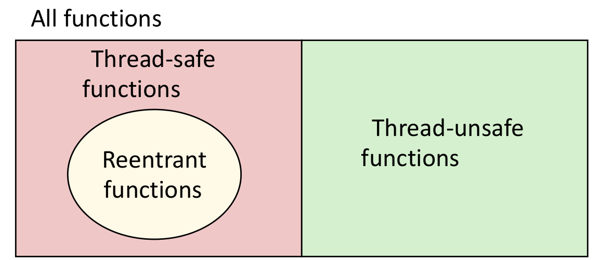
잠금을 쓰는 함수가 재진입 가능하지 않은 이유는 정의의 두 번째 줄에서 바로 나옵니다. 한 스레드가 goodcnt.c처럼 뮤텍스를 쥔 채 함수 안에 있을 때 시그널이 와서, 그 시그널 핸들러가 같은 함수를 부른다고 해 봅시다. 핸들러는 같은 뮤텍스에 \(P\)를 실행해 기다리기 시작하지만, 뮤텍스를 쥔 쪽은 핸들러가 돌아와야 다시 실행되는 바로 그 스레드이므로 영원히 풀리지 않습니다. 15강 5.9절이 시그널 핸들러에서는 재진입 가능하거나 시그널에 끊겨도 안전한 비동기 시그널 안전(async-signal-safe) 함수만 부르라고 한 것이 이 때문입니다. 반면 rand_r은 상태를 모두 인자로 받으므로, 각 호출이 서로 다른 시드 변수를 쓰는 한 도중에 다시 불려도 서로를 건드리지 않습니다.
5.5.8 스레드 안전한 라이브러리 함수 (Thread-Safe Library Functions)
- 표준 C 라이브러리의 모든 함수는 스레드 안전합니다.
- 예:
malloc,free,printf,scanf
- 예:
- 대부분의 Unix 시스템 호출은 스레드 안전하지만, 중요한 예외가 몇 가지 있습니다.
| 스레드 안전하지 않은 함수 | 부류 | 재진입 가능한 판 |
|---|---|---|
asctime |
3 | asctime_r |
ctime |
3 | ctime_r |
gethostbyaddr |
3 | gethostbyaddr_r |
gethostbyname |
3 | gethostbyname_r |
inet_ntoa |
3 | (없음) |
localtime |
3 | localtime_r |
rand |
2 | rand_r |
슬라이드의 두 문장은 조금 넓게 말한 것이어서, 표와 함께 읽으면 다음처럼 다듬어집니다.
- “모든 함수”는 지나친 표현입니다. 표의
rand·asctime·ctime·localtime이 바로 표준 C 라이브러리의 함수이므로, 정확히는 “표준 C 라이브러리의 대부분의 함수”입니다.malloc,printf같은 함수는 라이브러리 안에서 잠금으로 자기 공유 상태(힙, 출력 버퍼)를 보호해 스레드 안전하게 만든 것으로, 1부류를 고치는 방식과 같습니다. 그래서 이 함수들은 스레드 안전하지만 재진입 가능하지는 않으며, 15강 5.9절에서 시그널 핸들러 안에서printf를 부르지 말라고 한 것도 이 때문입니다. 위 그림으로 말하면 타원 밖, 분홍 영역 안에 놓이는 함수들입니다. - 표의 함수들은 시스템 호출이 아니라 라이브러리 함수입니다.
gethostbyname_r와gethostbyaddr_r는 표준이 아닌 GNU 확장입니다. 리눅스 man 페이지는gethostbyname류 전체를 낡은(obsolete) 함수로 보고, 대신 16강 2.9–2.10절에서 본 재진입 가능한getaddrinfo와getnameinfo를 쓰라고 권합니다.inet_ntoa는 결과를 정적 버퍼에 담아 돌려주는데(다음 호출이 덮어씁니다), 같은 이름의_r판은 없습니다. 대신 결과를 호출자의 버퍼에 써 주는inet_ntop이 같은 일을 합니다.
5.6 경쟁 (Races)
5.6.1 또 하나의 걱정거리: 경쟁 (One Worry: Races)
- 정의: 경쟁(race)은 프로그램의 정확성이, 한 스레드가 지점 x에 이르는 것이 다른 스레드가 지점 y에 이르는 것보다 먼저인지에 달려 있을 때 일어납니다.
// our old friend, the threaded program with a race
int main() {
pthread_t tid[N];
for (int i = 0; i < N; i++)
pthread_create(&tid[i], NULL, thread, &i);
for (int i = 0; i < N; i++)
pthread_join(tid[i], NULL);
return EXIT_SUCCESS;
}
// thread routine
void *thread(void *vargp) {
int myid = *((int *)vargp);
printf("Hello from thread %d\n", myid);
return NULL;
}- 주석의 “오랜 친구(our old friend)”대로 2.3절, 그리고 20강의 경쟁 시험과 같은 구조입니다(
race.c). - 정의에 맞춰 보면, 지점 x는 피어 스레드가
myid = *vargp로 값을 읽는 곳이고, 지점 y는 메인 스레드가 다음 반복에서i++를 하는 곳입니다. 모든 피어 스레드가 x에 먼저 이르러야만 각 스레드가 서로 다른 번호를 출력하고, 그렇지 않으면 같은 번호가 두 번 나오거나 어떤 번호가 빠집니다. - 여기에 문제가 하나 더 있습니다.
for (int i = 0; …)안에서 선언한i는 반복문이 끝나면 수명이 끝납니다. 첫 번째 반복문이 끝난 뒤에야 실행되는 피어 스레드는 이미 수명이 끝난 객체를 읽게 되고, 이것은 경쟁과 별개로 C 표준이 정의하지 않은 동작입니다. 예를 들어 컴파일러가 그 자리를 두 번째 반복문의i에 다시 쓰면, 피어 스레드는pthread_join반복문이 세는 값을 읽게 됩니다. 5.6.2절의 해법은 이 문제까지 함께 없앱니다.
5.6.2 경쟁 없애기 (Race Elimination)
- 상태를 의도치 않게 공유하지 않도록 합니다.
// …and the well known fix
int main() {
pthread_t tid[N];
for (int i = 0; i < N; i++) {
int *valp = malloc(sizeof(int)); // 스레드마다 새 칸
*valp = i; // 지금의 i 값을 복사
pthread_create(&tid[i], NULL, thread, valp);
}
for (int i = 0; i < N; i++)
pthread_join(tid[i], NULL);
return EXIT_SUCCESS;
}
// thread routine
void *thread(void *vargp) {
int myid = *((int *)vargp);
free(vargp); // 다 쓴 칸은 피어 스레드가 해제
printf("Hello from thread %d\n", myid);
return NULL;
}- “잘 알려진 해법(the well known fix)”은 2.4절의 올바른 방법과 같습니다. 각 스레드가 자기만의 칸을 받으므로 x와 y의 순서가 더는 결과에 영향을 주지 않고(
norace.c), 그 칸은 힙에 있어 반복문이 끝나도 수명이 끝나지 않습니다. - 결국 경쟁을 없애는 첫걸음은 2장의 질문, 곧 “이 인스턴스를 몇 개의 스레드가 참조하는가”를 묻는 것입니다. 공유할 필요가 없는 것은 공유하지 않고, 꼭 공유해야 하는 것만 4장의 방법으로 보호합니다.
5.7 교착 상태 (Deadlocks)
5.7.1 또 다른 걱정거리: 교착 상태 (Another Worry: Deadlock)
- 정의: 프로세스가 교착 상태에 있다(deadlocked)는 것은, 결코 참이 되지 않을 조건을 기다리고 있다는 뜻입니다.
- 전형적인 시나리오
- 프로세스 1과 2가 진행하려면 자원 A와 B가 둘 다 필요합니다.
- 프로세스 1은 A를 얻고 B를 기다립니다.
- 프로세스 2는 B를 얻고 A를 기다립니다.
- 둘 다 영원히 기다립니다!
슬라이드는 “프로세스”라고 적었지만 스레드에도 그대로 적용됩니다. 19강에서 교착 상태의 예로 든 교통 정체(gridlock)처럼, 각자가 상대가 가진 것을 기다리며 아무도 먼저 양보하지 않는 상황입니다.
5.7.2 세마포어로 생기는 교착 상태 (Deadlocking With Semaphores)
두 스레드가 뮤텍스 두 개를 잡고 cnt를 늘리는 프로그램입니다. mutex 배열, cnt, NITERS의 선언은 슬라이드에 나오지 않습니다.
int main()
{
pthread_t tid[2];
sem_init(&mutex[0], 0, 1); // mutex[0] = 1
sem_init(&mutex[1], 0, 1); // mutex[1] = 1
pthread_create(&tid[0], NULL, count, (void*) 0);
pthread_create(&tid[1], NULL, count, (void*) 1);
pthread_join(tid[0], NULL);
pthread_join(tid[1], NULL);
printf("cnt=%d\n", cnt);
return EXIT_SUCCESS;
}void* count(void *vargp)
{
int id = (int)vargp;
for (int i = 0; i < NITERS; i++) {
P(&mutex[id]); P(&mutex[1-id]);
cnt++;
V(&mutex[id]); V(&mutex[1-id]);
}
return NULL;
}id에 0과 1을 넣어 펼치면, 두 스레드는 다음 순서로 연산을 실행합니다(\(s_0\), \(s_1\)은 mutex[0], mutex[1]).
Tid[0] |
Tid[1] |
|---|---|
P(s0); |
P(s1); |
P(s1); |
P(s0); |
cnt++; |
cnt++; |
V(s0); |
V(s1); |
V(s1); |
V(s0); |
- 두 스레드가 두 뮤텍스를 반대 순서로 잡습니다. 스레드 0이 \(s_0\)을, 스레드 1이 \(s_1\)을 잡은 뒤에 각자 두 번째 뮤텍스를 요청하면, 스레드 0은 스레드 1이 쥔 \(s_1\)을, 스레드 1은 스레드 0이 쥔 \(s_0\)을 기다리며 둘 다 멈춥니다. 5.7.1절의 전형적인 시나리오 그대로입니다.
(void*) 0과(int)vargp는 2.5절의 편법입니다. 64비트에서 포인터를int로 바꾸면 크기가 달라 컴파일러가 경고하므로,long이나intptr_t를 거치는 편이 깔끔합니다.
5.7.3 진행 그래프로 본 교착 상태 (Deadlock Visualized in Progress Graph)
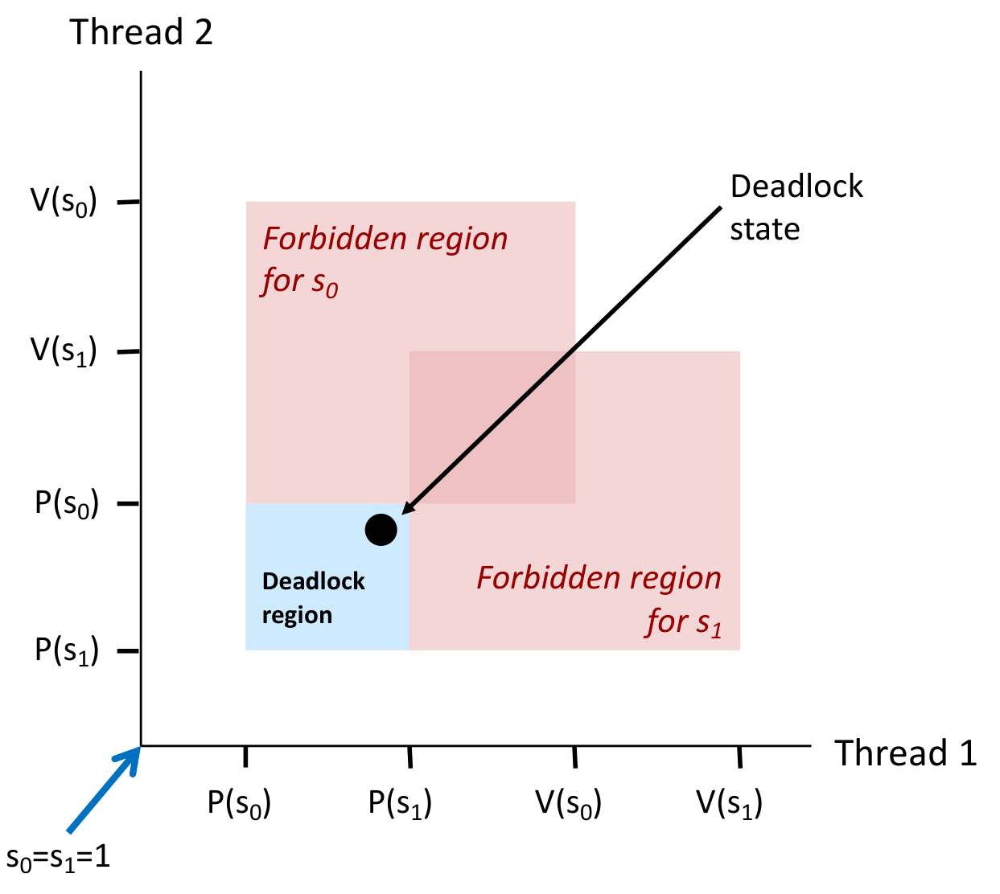
슬라이드의 설명은 다음과 같습니다.
- 잠금은 교착 상태의 가능성을 들여옵니다. 결코 참이 되지 않을 조건을 기다리게 될 수 있습니다.
- 교착 상태 영역(deadlock region)에 들어간 궤적은 결국 교착 상태(deadlock state)에 이르러, \(s_0\)이나 \(s_1\)이 0이 아니게 되기를 기다립니다.
- 다른 궤적들은 운 좋게 교착 상태 영역을 비켜 갑니다.
- 안타까운 사실: 교착 상태는 흔히 비결정적(nondeterministic)입니다.
마지막 문장이 실무에서 가장 무섭습니다. 4.6절과 같은 방식으로 각 세마포어가 금지 영역을 만드는데, 이번에는 두 금지 영역이 서로 어긋나게 놓여 그 사이에 오른쪽도 위쪽도 막힌 막다른 골목이 생겼습니다. 궤적이 그 골목에 들어가느냐는 3.6절의 안전하지 않은 영역과 마찬가지로 스케줄링에 달려 있으므로, 같은 프로그램이 수없이 잘 돌다가 어느 날 멈출 수 있고, 시험을 여러 번 해도 드러나지 않을 수 있습니다.
5.7.5 진행 그래프로 본 교착 상태 회피 (Avoiding Deadlock in Progress Graph)
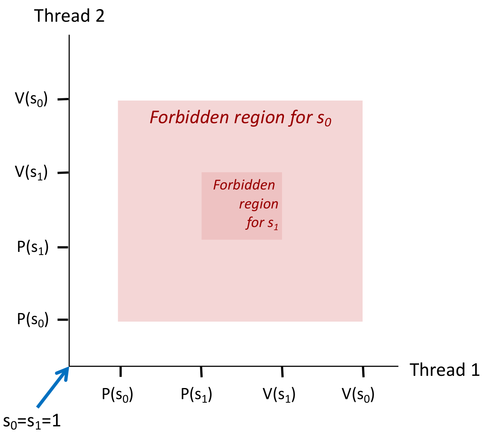
- 궤적이 막힐 길이 없습니다.
- 프로세스들이 같은 순서로 잠금을 얻습니다.
- 잠금을 푸는 순서는? — 위 규칙대로 교착 상태와는 관계가 없습니다. 그림으로 보아도, 두 스레드가 \(V(s_0)\)를 먼저 하도록 해제 순서를 바꾸면 \(s_1\)의 금지 영역이 큰 사각형의 오른쪽 위로 조금 비어져 나올 뿐, 그 영역의 왼쪽 아래 모서리는 여전히 \(s_0\)의 금지 영역 안에 있습니다. 그래서 5.7.3절처럼 두 금지 영역 사이에 궤적이 갇힐 자리가 생기지 않습니다.
6. 모듈 요약 (Module Summary)
6.1 동기화 요약 (Synchronization Summary)
Module Summary 구분 슬라이드 뒤의 요약은 다음과 같습니다.
- 스레드는 동시성 프로그램을 쓰는 또 하나의 방법을 제공합니다.
- 스레드는 인기가 있습니다.
- 프로세스보다 어느 정도 가볍습니다.
- 스레드 사이에 데이터를 나누기 쉽습니다.
- 그러나 나누기 쉬운 데에는 대가가 있습니다.
- 미묘한 동기화 오류를 들여오기 쉽습니다.
- 프로그래머는 스레드가 변수를 어떻게 공유하는지에 대한 분명한 모델을 가져야 합니다.
- 여러 스레드가 공유하는 변수는 상호 배타적 접근을 보장하도록 보호해야 합니다.
- 세마포어는 상호 배제를 강제하는 기본 메커니즘입니다.
- 더 알아보기: D. Butenhof, Programming with POSIX Threads, Addison-Wesley, 1997
본문과 대조하면 다음과 같습니다.
- “또 하나의 방법”은 19강의 프로세스 기반 동시성과 나란히 놓인 스레드를, “어느 정도 가볍다”와 “나누기 쉽다”는 20강에서 본 스레드의 장점을 가리킵니다.
- “대가”와 “미묘한 오류”가 3장의 잃어버린 갱신, 5.6절의 경쟁, 5.7절의 교착 상태이고, “분명한 모델”이 2장의 메모리 모델과 공유 변수 분석입니다.
- “보호해야 한다”와 “기본 메커니즘”이 4장의 세마포어이며, 5.3–5.5절의 생산자-소비자 · 독자-저자 · 스레드 안전성은 같은 메커니즘을 순서 정하기와 라이브러리 설계로 넓힌 것입니다.
정리하며 (Closing Remarks)
이번 강의의 논증 사슬을 단계별로 압축하면 다음과 같습니다.
| 단계 | 내용 | 근거 |
|---|---|---|
| ① 공유의 정의 | 변수는 여러 스레드가 그 한 인스턴스를 참조할 때 공유되며, 스레드 문맥(레지스터 · 스택)은 따로지만 실제로는 다른 스레드의 스택도 읽고 쓸 수 있다 | Shared Variables in Threaded C Programs, Threads Memory Model |
| ② 의도하지 않은 공유 | 반복문 변수의 주소 &i를 넘기면 피어 스레드가 읽기 전에 값이 바뀌는 경쟁이 생기고, 스레드마다 malloc한 칸에 값을 복사하거나 값 자체를 포인터로 바꿔 넘기면 피할 수 있다 |
Unintended Sharing, Avoid Unintended Sharing (The Proper Way, The Hacky Way) |
| ③ 인스턴스 대응 | 전역 · 지역 정적 변수는 인스턴스가 하나, 지역 변수는 스레드 스택마다 하나이므로, 예제에서 ptr · cnt · msgs는 공유되고 i · myid는 공유되지 않는다 |
Mapping Variable Instances to Memory, Shared Variable Analysis |
| ④ 잃어버린 갱신 | cnt++는 적재 · 갱신 · 저장 세 명령이고, 두 스레드의 이 명령들이 번갈아 실행되면 한 갱신이 사라져 20,000 대신 13,051 같은 값이 나온다 |
badcnt.c, Assembly Code for Counter Loop, Concurrent Execution |
| ⑤ 진행 그래프 | 실행 상태를 격자점으로, 실행 순서를 오른쪽 · 위로만 가는 궤적으로 그리면 두 임계 구역이 겹치는 상태들이 안전하지 않은 영역이 되고, 궤적은 안전할 때 그리고 그때에만 올바르다(252가지 중 52가지) | Progress Graphs, Trajectories in Progress Graphs, Critical Sections and Unsafe Regions |
| ⑥ 세마포어 | 음이 아닌 정수 \(s\)를 원자적인 \(P\)(0이면 기다렸다가 1 감소)와 \(V\)(1 증가)로만 다루므로 \(s \ge 0\)이 항상 성립하며, POSIX에서는 sem_init · sem_wait · sem_post로 쓴다 |
Enforcing Mutual Exclusion, Semaphores, Pthread Semaphore API |
| ⑦ 상호 배제 | 공유 변수마다 초깃값 1인 뮤텍스를 두고 임계 구역을 \(P\) · \(V\)로 감싸면, \(s\)가 −1이 될 상태들이 금지 영역이 되어 안전하지 않은 영역을 둘러싸므로 모든 궤적이 안전해진다 | Using Semaphores for Mutual Exclusion, goodcnt.c, Why Mutexes Work |
| ⑧ 순서 정하기 | 한 스레드의 \(V\)로 다른 스레드의 \(P\)를 깨워 조건을 알릴 수 있어, 생산자-소비자는 빈 칸과 항목을 세는 세마포어(칸이 n개면 뮤텍스 하나를 더해 sbuf)로, 작업자 스레드를 미리 만들어 둔 서버는 연결 디스크립터를 담는 sbuf로 구현된다 |
Using Semaphores to Schedule Access to Shared Resources, Producer-Consumer Problem, sbuf Package, Prethreaded Concurrent Server |
| ⑨ 독자-저자 | 저자는 배타적으로, 독자는 함께 접근하게 하는 문제이며, 첫 독자가 w를 잠그고 마지막 독자가 푸는 해법은 독자를 우선해 저자의 기아 상태를 낳을 수 있다 |
Readers-Writers Problem, Variants of Readers-Writers, Solution to First Readers-Writers Problem |
| ⑩ 스레드 안전성 | 스레드에서 부르는 함수는 스레드 안전해야 하며, 공유 변수 무보호 · 호출 사이의 상태 · 정적 변수 포인터 반환 · 안전하지 않은 함수 호출의 네 부류는 각각 잠금, 상태를 인자로 넘기기, 결과 자리 넘기기나 잠그고 복사하기, 안전한 함수로 바꾸기로 고친다 | Crucial concept: Thread Safety, Class-1–4 Thread-Unsafe Functions, Thread-Safe Random Number Generator |
| ⑪ 재진입 | 공유 변수에 전혀 접근하지 않는 재진입 함수는 동기화 없이 스레드 안전한 부분집합이며 2부류를 고치는 유일한 길이고, 라이브러리의 몇몇 함수는 _r로 끝나는 재진입 판을 따로 둔다 |
Reentrant Functions, Thread-Safe Library Functions |
| ⑫ 경쟁 | 경쟁은 한 스레드가 지점 x에 이르는 것이 다른 스레드가 지점 y에 이르는 것보다 먼저인지에 정확성이 달린 상황이며, 상태를 의도치 않게 공유하지 않는 것으로 없앤다 | One Worry: Races, Race Elimination |
| ⑬ 교착 상태 | 두 스레드가 잠금 두 개를 반대 순서로 얻으면 서로 상대가 쥔 잠금을 기다리는 교착 상태 영역이 생기고, 모든 스레드가 같은 순서로 얻으면 해제 순서와 관계없이 그런 영역이 사라진다 | Another Worry: Deadlock, Deadlocking With Semaphores, Deadlock Visualized in Progress Graph, Avoiding Deadlocks, Avoiding Deadlock in Progress Graph |
| ⑭ 요약 | 스레드는 프로세스보다 가볍고 데이터를 나누기 쉽지만 그만큼 미묘한 동기화 오류를 만들기 쉬우므로, 공유의 모델을 분명히 알고 공유 변수를 세마포어로 보호해야 한다 | Synchronization Summary |